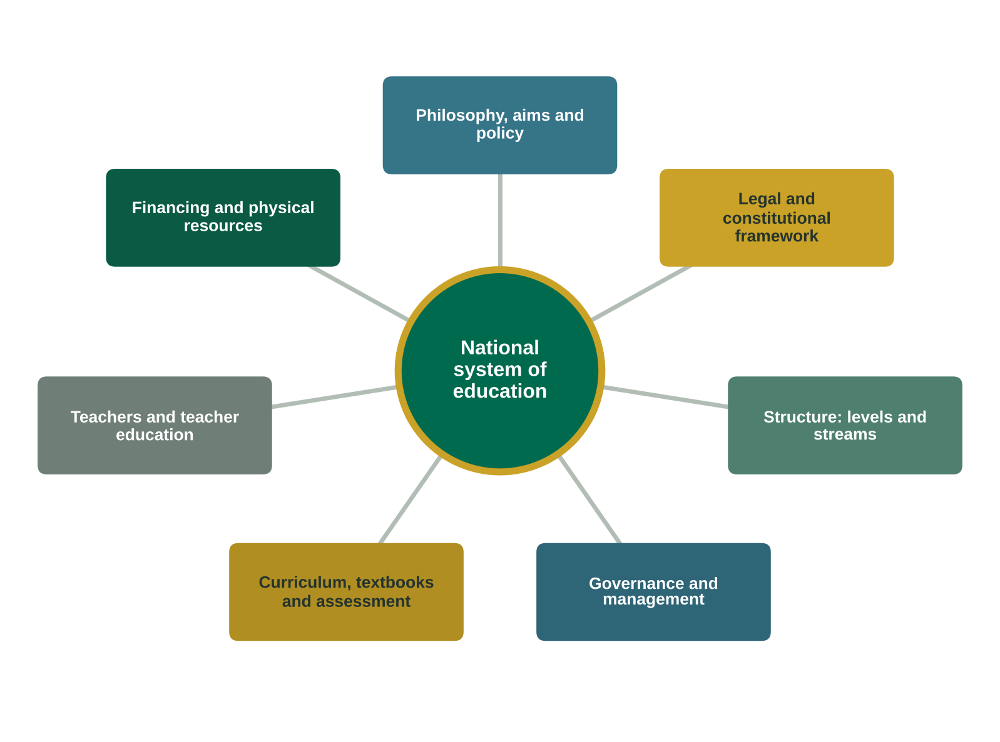
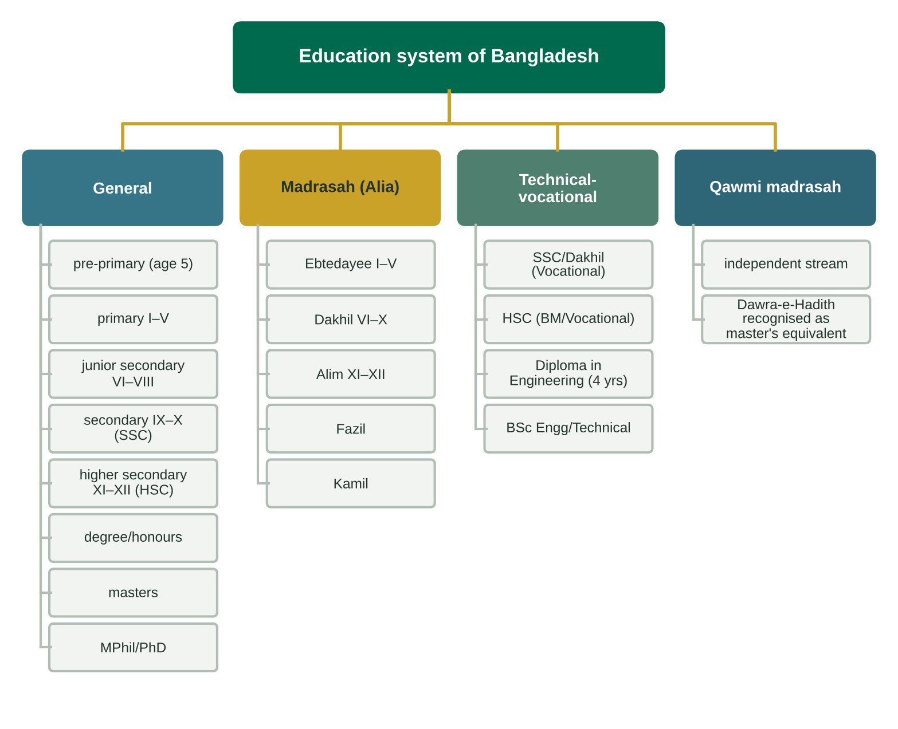
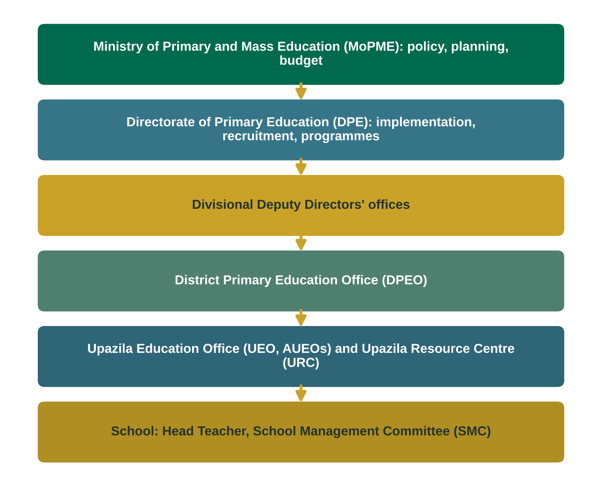
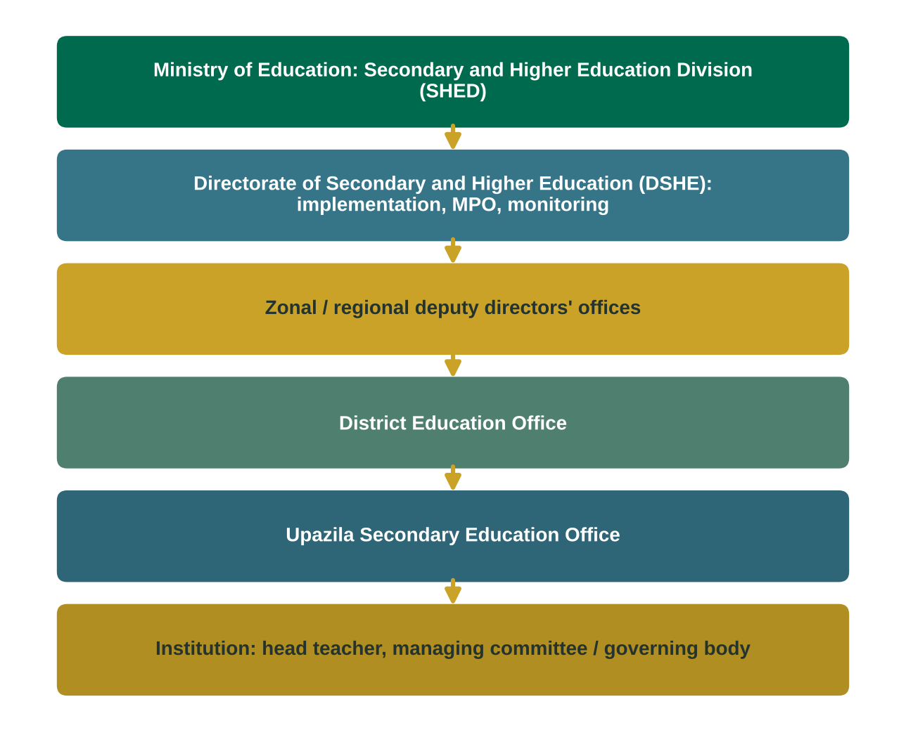
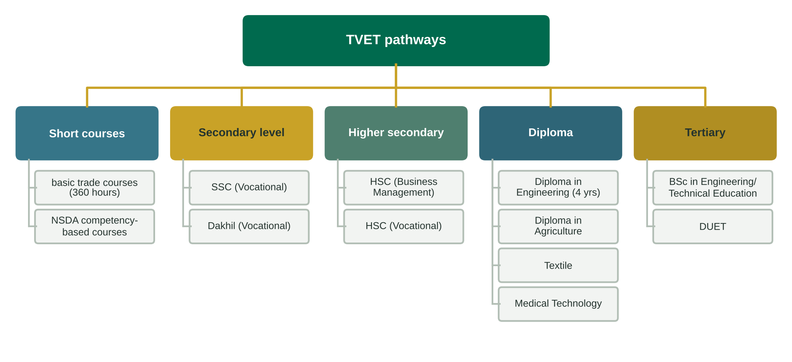

PC 112 বাংলাদেশের শিক্ষা
জাতীয় শিক্ষাব্যবস্থার ইতিহাস, কাঠামো, পরিচালনা, উপখাত এবং SDG 4
এটি ইংরেজি পাঠ নোটের বাংলা সংস্করণ। পাঠতালিকা ও তথ্যসূত্রের বইয়ের নাম মূল ভাষায় রাখা হয়েছে, যাতে লাইব্রেরিতে সহজে খুঁজে পান।
সূচিপত্র
এই কোর্স সম্পর্কে
এই কোর্সে বাংলাদেশের জাতীয় শিক্ষাব্যবস্থার একটি সামগ্রিক চিত্র তুলে ধরা হয়েছে: বৈদিক ও বৌদ্ধ যুগ থেকে বর্তমান পর্যন্ত এর ঐতিহাসিক ভিত্তি, এর সাংবিধানিক ও আইনি কাঠামো এবং প্রতিটি উপখাত (প্রাক্-প্রাথমিক ও প্রাথমিক, মাধ্যমিক, উচ্চতর, মাদ্রাসা, কারিগরি ও বৃত্তিমূলক এবং শরণার্থী শিক্ষা)। প্রতিটি উপখাতের ক্ষেত্রে এই পাঠে লক্ষ্য, কাঠামো, প্রবেশাধিকার ও অংশগ্রহণ, শিক্ষাক্রম ও মূল্যায়ন, ব্যবস্থাপনা ও অর্থায়ন, শিক্ষক শিক্ষা, উন্নয়ন কর্মসূচি এবং প্রধান সমস্যা ও তার সম্ভাব্য সমাধান আলোচনা করা হয়েছে, এবং সবকিছুই টেকসই উন্নয়ন লক্ষ্যমাত্রা ৪-এর প্রেক্ষাপটে বিবেচনা করা হয়েছে।
কোর্সের উদ্দেশ্য
জাতীয় শিক্ষাব্যবস্থার ধারণা, কাঠামো, লক্ষ্য ও আইনি কাঠামো ব্যাখ্যা করতে পারবেন।
প্রতিটি উপখাতের অবস্থা, পরিচালনা, শিক্ষাক্রম, মূল্যায়ন ও অর্থায়ন বর্ণনা করতে পারবেন।
মাদ্রাসা শিক্ষাকে একটি সমান্তরাল ধারা এবং TVET-কে অর্থনৈতিক উন্নয়নের চালিকাশক্তি হিসেবে অনুধাবন করতে পারবেন।
প্রধান চ্যালেঞ্জগুলো চিহ্নিত করতে এবং SDG 4-এর সঙ্গে সামঞ্জস্যপূর্ণ প্রমাণভিত্তিক সমাধান প্রস্তাব করতে পারবেন।
প্রতিটি ইউনিট অফিশিয়াল পাঠ্যসূচির ক্রম অনুসরণ করে। প্রথমে মূল আলোচনা পড়ুন, তারপর মূল কথা বক্সগুলো, এরপর পরীক্ষার প্রস্তুতি প্রশ্ন দিয়ে নিজেকে যাচাই করুন।
সোনালি বক্স = অবশ্যই মনে রাখার বিষয়। সবুজাভ নীল বক্স = সংজ্ঞা ও পড়ার কৌশল। সবুজ বক্স = বাংলাদেশ প্রেক্ষাপট।
শেষ অধ্যায়টি বিশ্ববিদ্যালয় পরীক্ষার ধরনে একটি প্রশ্নব্যাংক (উত্তরসহ MCQ, সংক্ষিপ্ত ও রচনামূলক প্রশ্ন), এরপর APA 7th রীতিতে পূর্ণ তথ্যসূত্র।
ভর্তি, বাজেট ও নীতি সংক্রান্ত পরিসংখ্যান প্রতি বছর বদলায়। পরীক্ষার আগে BANBEIS, DPE, UGC ও UNESCO-এর সর্বশেষ তথ্য দেখে নিন।
ইউনিট ১: জাতীয় ব্যবস্থা হিসেবে শিক্ষা
অধ্যায়ের সারসংক্ষেপ
জাতীয় শিক্ষাব্যবস্থা হলো প্রতিষ্ঠান, কর্মসূচি, আইন, নীতি, শিক্ষাক্রম, জনবল ও অর্থায়নের এমন একটি সংগঠিত সমগ্র, যার মাধ্যমে একটি রাষ্ট্র তার জাতীয় দর্শন ও উন্নয়ন লক্ষ্যের সঙ্গে সংগতি রেখে জনগণকে শিক্ষা প্রদান করে। এর রয়েছে একটি অভিন্ন আইনি ভিত্তি, একটি সুনির্দিষ্ট কাঠামো (স্তর ও ধারা), পরিচালনা ব্যবস্থা (মন্ত্রণালয়, অধিদপ্তর, বোর্ড), মানদণ্ড (শিক্ষাক্রম, পরীক্ষা…
এই অধ্যায়ে যা আছে: জাতীয় শিক্ষাব্যবস্থার ধারণা; বঙ্গদেশ ও বাংলাদেশে শিক্ষার ঐতিহাসিক বিকাশ; লক্ষ্য, দর্শন, নীতি ও সাংবিধানিক বিধান; শিক্ষাব্যবস্থার কাঠামো; টেকসই উন্নয়ন লক্ষ্যমাত্রা ৪।
মনে রাখার মূল বিষয়:
- "৭ + ৩" মনে রাখুন: সাতটি ফলাফলভিত্তিক লক্ষ্য (4.1–4.7) এবং বাস্তবায়নের তিনটি উপায় (4.a–4.c)।
শিক্ষাক্রমে যা বলা হয়েছেইউনিট ১: জাতীয় ব্যবস্থা হিসেবে শিক্ষা - একটি রূপান্তরের পর্যায় · ৭ সংযোগ ঘণ্টা
এই ইউনিট শেষে শিক্ষার্থীরা যা পারবে
- আর্য যুগ থেকে বর্তমান পর্যন্ত শিক্ষার সংক্ষিপ্ত ইতিহাস বর্ণনা করতে পারবেন
- শিক্ষার লক্ষ্য ও উদ্দেশ্যের সঙ্গে শিক্ষাদর্শনের সম্পর্ক ব্যাখ্যা করতে পারবেন
- জাতীয় শিক্ষাব্যবস্থার উৎপত্তি ও উপাদান ব্যাখ্যা করতে পারবেন
- শিক্ষাব্যবস্থার বর্তমান কাঠামো উপস্থাপন করতে পারবেন
- বাংলাদেশে শিক্ষার আইনি কাঠামো বর্ণনা করতে পারবেন
- বাংলাদেশের শিক্ষাব্যবস্থার কাঠামো ব্যাখ্যা করতে পারবেন
- শিক্ষার সঙ্গে সম্পর্কিত টেকসই উন্নয়ন লক্ষ্যমাত্রা (SDG-4) বর্ণনা করতে পারবেন
- জাতীয় শিক্ষাব্যবস্থার ধারণা
- আর্য যুগ থেকে বর্তমান পর্যন্ত শিক্ষার ঐতিহাসিক বিকাশ
- জাতীয় শিক্ষাব্যবস্থার উৎপত্তি, উপাদান ও প্রকারভেদ
- লক্ষ্য, উদ্দেশ্য, দর্শন, নীতি, সাংবিধানিক বিধান ও আইনি কাঠামো
- শিক্ষার কাঠামো
- টেকসই উন্নয়ন লক্ষ্যমাত্রা (SDG-4)
১.১ জাতীয় শিক্ষাব্যবস্থার ধারণা
জাতীয় শিক্ষাব্যবস্থা (national system of education) হলো প্রতিষ্ঠান, কর্মসূচি, আইন, নীতি, শিক্ষাক্রম (curriculum), জনবল ও অর্থায়নের এমন একটি সংগঠিত সমগ্র, যার মাধ্যমে একটি রাষ্ট্র তার জাতীয় দর্শন ও উন্নয়ন লক্ষ্যের সঙ্গে সংগতি রেখে জনগণকে শিক্ষা প্রদান করে। এর রয়েছে একটি অভিন্ন আইনি ভিত্তি, একটি সুনির্দিষ্ট কাঠামো (স্তর ও ধারা), পরিচালনা ব্যবস্থা (governance) (মন্ত্রণালয়, অধিদপ্তর, বোর্ড), মানদণ্ড (শিক্ষাক্রম, পরীক্ষা, যোগ্যতা) এবং অর্থায়ন পদ্ধতি। একটি জাতীয় ব্যবস্থা অভিন্ন বা একরূপ নয়, তবে তা সুসংহত: এর অংশগুলো স্বীকৃত সমতা (equivalence) ও উত্তরণের পথের মাধ্যমে পরস্পর যুক্ত।
জাতীয় ব্যবস্থার উপাদান

চিত্র ১। জাতীয় শিক্ষাব্যবস্থার উপাদান
জাতীয় ব্যবস্থার প্রকারভেদ
কেন্দ্রীভূত (Centralised) (ঐতিহাসিকভাবে ফ্রান্স; বহুলাংশে বাংলাদেশ): শিক্ষাক্রম, পাঠ্যপুস্তক, পরীক্ষা ও শিক্ষক নিয়োগ জাতীয় পর্যায় থেকে নিয়ন্ত্রিত হয়।
বিকেন্দ্রীভূত (Decentralised) (যুক্তরাষ্ট্র, জার্মানি, অঙ্গরাজ্যভিত্তিক): অধিকাংশ সিদ্ধান্ত অঙ্গরাজ্য বা স্থানীয় কর্তৃপক্ষ নিয়ন্ত্রণ করে।
মিশ্র / আধা-কেন্দ্রীভূত: জাতীয় কাঠামোর আওতায় স্থানীয় পর্যায়ে বাস্তবায়ন (১৯৮৮ সালের পরের ইংল্যান্ড; বাংলাদেশের বিদ্যালয় ব্যবস্থাপনা কমিটি ও উপজেলা শিক্ষা অফিস এর একটি উপাদান)।
১.২ বঙ্গদেশ ও বাংলাদেশে শিক্ষার ঐতিহাসিক বিকাশ

চিত্র ২। বঙ্গদেশ ও বাংলাদেশে শিক্ষার ইতিহাসের গুরুত্বপূর্ণ মাইলফলক
প্রাচীন যুগ (বৈদিক/আর্য, আনুমানিক খ্রিস্টপূর্ব ১৫০০ থেকে)
শিক্ষা ছিল ধর্মভিত্তিক ও আবাসিক, যা সংগঠিত হতো গুরুকুল (শিক্ষার্থী শিক্ষকের গৃহে বাস করত), টোল ও চতুষ্পাঠী (সংস্কৃত শিক্ষার কেন্দ্র)-তে। শিক্ষাক্রমে অন্তর্ভুক্ত ছিল বেদ, ব্যাকরণ, ন্যায়শাস্ত্র, দর্শন ও জ্যোতির্বিদ্যা; শিক্ষার পদ্ধতি ছিল মৌখিক মুখস্থকরণ এবং উপনয়ন দীক্ষা। এই শিক্ষা মূলত উচ্চবর্ণ ও ছেলেদের মধ্যে সীমাবদ্ধ ছিল।
বৌদ্ধ যুগ (আনুমানিক খ্রিস্টপূর্ব ষষ্ঠ শতক থেকে খ্রিস্টীয় দ্বাদশ শতক)
বৌদ্ধ বিহারগুলো সকল বর্ণের জন্য উন্মুক্ত মহান বিশ্ববিদ্যালয়ে পরিণত হয়: নালন্দা, বিক্রমশীলা, ওদন্তপুরী এবং বর্তমান বাংলাদেশে সোমপুর মহাবিহার (পাহাড়পুর, নওগাঁ), শালবন বিহার (ময়নামতি, কুমিল্লা) ও জগদ্দল। শিক্ষাদানে আলোচনা ও বিতর্ক ব্যবহৃত হতো, এবং শিক্ষাক্রমে ধর্মের পাশাপাশি ন্যায়শাস্ত্র, চিকিৎসাবিদ্যা ও বিভিন্ন কলা অন্তর্ভুক্ত ছিল।
মুসলিম যুগ (ত্রয়োদশ থেকে অষ্টাদশ শতক)
মসজিদসংলগ্ন প্রাথমিক মক্তবে কুরআন পাঠ, লেখা ও পাটিগণিত শেখানো হতো; মাদ্রাসাগুলো ধর্মতত্ত্ব, আইনশাস্ত্র, ন্যায়শাস্ত্র, আরবি ও ফারসি বিষয়ে উচ্চশিক্ষা প্রদান করত। ফারসি ছিল রাজদরবারের ভাষা, এবং সুলতান, নবাব ও জমিদারগণ শিক্ষার পৃষ্ঠপোষকতা করতেন। দেশীয় প্রাথমিক বিদ্যালয় হিসেবে পাঠশালা চালু ছিল।
ব্রিটিশ ঔপনিবেশিক যুগ (১৭৫৭ থেকে ১৯৪৭)
| বছর | ঘটনা | তাৎপর্য |
|---|---|---|
| 1780 | কলকাতা আলিয়া মাদ্রাসা (ওয়ারেন হেস্টিংস) | আলিয়া মাদ্রাসা ধারার সূচনা |
| 1813 | চার্টার অ্যাক্ট | শিক্ষার জন্য প্রথম সরকারি বরাদ্দ (১ লক্ষ টাকা) |
| 1835 | মেকলের মিনিট | ইংরেজি মাধ্যমে পাশ্চাত্য শিক্ষা; "চুইয়ে পড়া নীতি" (downward filtration theory) |
| 1854 | উডের ডেসপ্যাচ | "ভারতে ইংরেজি শিক্ষার ম্যাগনা কার্টা": শিক্ষা বিভাগ, অনুদান সহায়তা (grants-in-aid), বিশ্ববিদ্যালয় |
| 1857 | কলকাতা বিশ্ববিদ্যালয় | অধিভুক্তকারী ও পরীক্ষা গ্রহণকারী বিশ্ববিদ্যালয় |
| 1882 | হান্টার কমিশন | স্থানীয় সংস্থার অধীনে প্রাথমিক শিক্ষার ওপর গুরুত্বারোপ |
| 1917–19 | স্যাডলার (কলকাতা বিশ্ববিদ্যালয়) কমিশন | ঢাকায় একটি শিক্ষাদানকারী ও আবাসিক বিশ্ববিদ্যালয় প্রতিষ্ঠার সুপারিশ |
| 1921 | ঢাকা বিশ্ববিদ্যালয় | বর্তমান বাংলাদেশ ভূখণ্ডের প্রথম বিশ্ববিদ্যালয় |
| 1930 | বঙ্গীয় (গ্রামীণ) প্রাথমিক শিক্ষা আইন | বাধ্যতামূলক শিক্ষাবিষয়ক প্রথম দিকের আইন |
পাকিস্তান আমল (১৯৪৭ থেকে ১৯৭১)
এ সময়ের কমিশনগুলোর মধ্যে ছিল আকরাম খান কমিটি (১৯৪৯), আতাউর রহমান খান কমিশন (১৯৫৭), শরীফ কমিশন (১৯৫৯), যার বেতন-ফি ও তিন বছর মেয়াদি ডিগ্রি সংক্রান্ত সুপারিশ ১৯৬২ সালের ছাত্র আন্দোলনের সূত্রপাত ঘটায়, হামুদুর রহমান কমিশন (১৯৬৪) এবং নূর খান প্রস্তাব (১৯৬৯)। ভাষা আন্দোলন (১৯৫২) শিক্ষার মাধ্যমকে একটি জাতীয় রাজনৈতিক প্রশ্নে পরিণত করে।
বাংলাদেশ (১৯৭১ থেকে বর্তমান)
| বছর | কমিশন / নীতি | প্রধান সুপারিশসমূহ |
|---|---|---|
| 1974 | কুদরাত-এ-খুদা শিক্ষা কমিশন | ধর্মনিরপেক্ষ, বিজ্ঞানভিত্তিক ও কর্মমুখী শিক্ষা; অবৈতনিক ও বাধ্যতামূলক ৮ বছর মেয়াদি প্রাথমিক শিক্ষা; বাংলা মাধ্যম; একমুখী ধারা |
| 1979 | অন্তর্বর্তীকালীন শিক্ষানীতি | প্রাথমিক ও মাধ্যমিক স্তরের পুনর্গঠন |
| 1983 | মজিদ খান কমিশন | কাঠামোগত সংস্কার (বিতর্কিত, বাস্তবায়িত হয়নি) |
| 1988 | মফিজ উদ্দিন কমিশন | সমন্বিত সংস্কার প্রস্তাব |
| 1997 | শামসুল হক কমিটি | ২০০০ সালের নীতির ভিত্তি |
| 2000 | জাতীয় শিক্ষানীতি ২০০০ | অনুমোদিত হলেও পরে স্থগিত |
| 2003 | মনিরুজ্জামান মিঞা কমিশন | ২০০১–০৬ সময়কালের প্রস্তাবসমূহ |
| 2010 | জাতীয় শিক্ষানীতি (কবীর চৌধুরী কমিটি) | এক বছর মেয়াদি প্রাক্-প্রাথমিক; অষ্টম শ্রেণি পর্যন্ত প্রাথমিক; নবম–দ্বাদশ শ্রেণি মাধ্যমিক; সকল ধারায় অভিন্ন মৌলিক বিষয়; সৃজনশীল প্রশ্ন; TVET সম্প্রসারণ; স্থায়ী শিক্ষা কমিশন |
| 2021 | জাতীয় শিক্ষাক্রম রূপরেখা | প্রাক্-প্রাথমিক থেকে দ্বাদশ শ্রেণি পর্যন্ত যোগ্যতাভিত্তিক, অভিজ্ঞতানির্ভর শিক্ষাক্রম |
২০২৩ সাল থেকে বাংলাদেশের শিক্ষানীতি দ্রুত পরিবর্তিত হয়েছে। যোগ্যতাভিত্তিক NCF 2021 শিক্ষাক্রম ২০২৩ সাল থেকে চালু করা হয়, এবং ২০২৪ সালের রাজনৈতিক পালাবদলের পর কর্তৃপক্ষ ঘোষণা করে যে নতুন সংস্কার প্রস্তুত না হওয়া পর্যন্ত ২০২৫ সাল থেকে মাধ্যমিক শ্রেণিগুলোতে ২০১২ সালের শিক্ষাক্রমের একটি সংশোধিত সংস্করণে ফিরে যাওয়া হবে। পরীক্ষার আগে সর্বদা NCTB ও মন্ত্রণালয়ের সর্বশেষ ঘোষণা যাচাই করে নিন, কারণ পরীক্ষকগণ চলমান সংস্কার নিয়ে প্রশ্ন করতে পছন্দ করেন।
১.৩ লক্ষ্য, দর্শন, নীতি ও সাংবিধানিক বিধান
বাংলাদেশের শিক্ষাদর্শন ১৯৭২ সালের সংবিধানের চারটি মৌলিক রাষ্ট্রীয় মূলনীতি (জাতীয়তাবাদ, সমাজতন্ত্র, গণতন্ত্র ও ধর্মনিরপেক্ষতা), মুক্তিযুদ্ধ ও ভাষা আন্দোলনের চেতনা এবং বিজ্ঞান, মানবতাবাদ ও সামাজিক ন্যায়বিচারের প্রতি অঙ্গীকারের ওপর প্রতিষ্ঠিত। NEP 2010-এ ৩০টি লক্ষ্য ও উদ্দেশ্য উল্লেখ করা হয়েছে, যার মধ্যে রয়েছে:
মুক্তিযুদ্ধের চেতনার প্রতিফলন ঘটানো এবং দেশপ্রেম জাগ্রত করা;
মানবিক, যুক্তিবাদী, বিজ্ঞানমনস্ক ও সৃজনশীল নাগরিক গড়ে তোলা;
জেন্ডার, ধর্ম, নৃতাত্ত্বিক পরিচয়, অবস্থান বা প্রতিবন্ধিতা নির্বিশেষে সমান সুযোগ নিশ্চিত করা;
জ্ঞানভিত্তিক অর্থনীতির চাহিদা পূরণে দক্ষ মানবসম্পদ গড়ে তোলা;
নৈতিক ও ধর্মীয় মূল্যবোধ এবং সকল ধর্মের প্রতি শ্রদ্ধাবোধ বিকশিত করা।
সাংবিধানিক বিধান। অনুচ্ছেদ ১৫ (মৌলিক প্রয়োজন হিসেবে শিক্ষা), অনুচ্ছেদ ১৭ (অবৈতনিক ও বাধ্যতামূলক শিক্ষা; সমাজের প্রয়োজনের সঙ্গে শিক্ষাকে সংগতিপূর্ণ করা; নিরক্ষরতা দূরীকরণ), অনুচ্ছেদ ১৯ (সুযোগের সমতা), অনুচ্ছেদ ২৩ (সংস্কৃতির সংরক্ষণ), অনুচ্ছেদ ২৮ (বৈষম্যহীনতা এবং নারী, শিশু ও অনগ্রসর অংশের জন্য বিশেষ বিধান) এবং অনুচ্ছেদ ৪১ (অন্য ধর্মাবলম্বী কোনো ব্যক্তির ওপর ধর্মীয় শিক্ষা চাপিয়ে দেওয়া যাবে না)।
আইনি কাঠামো
প্রাথমিক শিক্ষা (বাধ্যতামূলককরণ) আইন ১৯৯০
বেসরকারি বিশ্ববিদ্যালয় আইন ১৯৯২, যা পরবর্তীতে বেসরকারি বিশ্ববিদ্যালয় আইন ২০১০ দ্বারা প্রতিস্থাপিত হয়
বাংলাদেশ বিশ্ববিদ্যালয় মঞ্জুরি কমিশন আদেশ ১৯৭৩ (রাষ্ট্রপতির আদেশ নং ১০)
বেসরকারি শিক্ষক নিবন্ধন ও প্রত্যয়ন কর্তৃপক্ষ (NTRCA) আইন ২০০৫
প্রতিবন্ধী ব্যক্তির অধিকার ও সুরক্ষা আইন ২০১৩ এবং নিউরো-ডেভেলপমেন্টাল প্রতিবন্ধী সুরক্ষা ট্রাস্ট আইন ২০১৩
উপানুষ্ঠানিক শিক্ষা আইন ২০১৪
বাংলাদেশ অ্যাক্রেডিটেশন কাউন্সিল আইন ২০১৭
জাতীয় দক্ষতা উন্নয়ন কর্তৃপক্ষ আইন ২০১৮
আল-হাইআতুল উলয়া লিল-জামিআতিল কওমিয়া বাংলাদেশ আইন ২০১৮ (কওমি দাওরায়ে হাদিস ডিগ্রির স্বীকৃতি)
শিক্ষা আইনের খসড়া (অনিষ্পন্ন)
১.৪ শিক্ষাব্যবস্থার কাঠামো

চিত্র ৩। বাংলাদেশে আনুষ্ঠানিক শিক্ষার কাঠামো (নির্দেশক বয়সসহ)
কাঠামোর প্রধান বৈশিষ্ট্যসমূহ:
তিনটি প্রধান ধারা (সাধারণ, মাদ্রাসা ও কারিগরি-বৃত্তিমূলক), এর পাশাপাশি স্বতন্ত্র কওমি মাদ্রাসা এবং ইংরেজি মাধ্যম (O/A লেভেল) বিদ্যালয়।
দশম শ্রেণির শেষে (SSC/দাখিল/SSC ভোকেশনাল) এবং দ্বাদশ শ্রেণির শেষে (HSC/আলিম/HSC ভোকেশনাল) পাবলিক পরীক্ষা, যা পরিচালনা করে ১১টি শিক্ষা বোর্ড: ৯টি সাধারণ বোর্ড (ঢাকা, রাজশাহী, কুমিল্লা, যশোর, চট্টগ্রাম, বরিশাল, সিলেট, দিনাজপুর, ময়মনসিংহ), বাংলাদেশ মাদ্রাসা শিক্ষা বোর্ড এবং বাংলাদেশ কারিগরি শিক্ষা বোর্ড।
২০০৯–১০ সালে প্রবর্তিত পঞ্চম শ্রেণির (PECE) ও অষ্টম শ্রেণির (JSC/JDC) সমাপনী পরীক্ষা ২০২০ সাল থেকে আর অনুষ্ঠিত হয়নি।
উপানুষ্ঠানিক শিক্ষা ব্যুরোর অধীনে উপানুষ্ঠানিক পথগুলো দ্বিতীয় সুযোগ ও সাক্ষরতা কর্মসূচি প্রদান করে, যার সমতা উপানুষ্ঠানিক শিক্ষা আইন ২০১৪ (NFE Act 2014) অনুযায়ী নির্ধারিত।
১.৫ টেকসই উন্নয়ন লক্ষ্যমাত্রা ৪
SDG 4: "সকলের জন্য একীভূত ও সমতাভিত্তিক মানসম্মত শিক্ষা নিশ্চিত করা এবং জীবনব্যাপী শিখনের সুযোগ উৎসাহিত করা" (United Nations, 2015; UNESCO, 2016)।
| লক্ষ্য (Target) | মূল লক্ষ্য |
|---|---|
| 4.1 | প্রাসঙ্গিক শিখনফলসহ অবৈতনিক, সমতাভিত্তিক ও মানসম্মত প্রাথমিক ও মাধ্যমিক শিক্ষা |
| 4.2 | মানসম্মত প্রারম্ভিক শৈশব বিকাশ, যত্ন ও প্রাক্-প্রাথমিক শিক্ষা |
| 4.3 | সাশ্রয়ী ও মানসম্মত TVET এবং উচ্চতর শিক্ষায় সমান প্রবেশাধিকার |
| 4.4 | কর্মসংস্থান, শোভন কাজ ও উদ্যোক্তা হওয়ার উপযোগী দক্ষতাসম্পন্ন যুব ও প্রাপ্তবয়স্কের সংখ্যা বৃদ্ধি |
| 4.5 | জেন্ডার বৈষম্য দূরীকরণ; ঝুঁকিপূর্ণ জনগোষ্ঠী, প্রতিবন্ধী ব্যক্তি ও আদিবাসী জনগোষ্ঠীর জন্য সমান প্রবেশাধিকার |
| 4.6 | সকল যুব এবং প্রাপ্তবয়স্কদের একটি উল্লেখযোগ্য অংশের সাক্ষরতা ও গাণিতিক দক্ষতা অর্জন |
| 4.7 | টেকসই উন্নয়ন, বৈশ্বিক নাগরিকত্ব ও শান্তির সংস্কৃতির জন্য জ্ঞান ও দক্ষতা |
| 4.a | নিরাপদ, একীভূত ও কার্যকর শিখন পরিবেশ নির্মাণ ও উন্নীতকরণ |
| 4.b | উন্নয়নশীল দেশগুলোর জন্য বৃত্তির সংখ্যা বৃদ্ধি |
| 4.c | যোগ্য শিক্ষকের সরবরাহ বৃদ্ধি |
"৭ + ৩" মনে রাখুন: সাতটি ফলাফলভিত্তিক লক্ষ্য (4.1–4.7) এবং বাস্তবায়নের তিনটি উপায় (4.a–4.c)। Education 2030 Framework for Action শিক্ষাখাতে GDP-এর ৪–৬% এবং/অথবা সরকারি ব্যয়ের ১৫–২০% বরাদ্দের সুপারিশ করে। সাম্প্রতিক বছরগুলোতে বাংলাদেশ শিক্ষাখাতে GDP-এর প্রায় ২% ব্যয় করেছে, যা দক্ষিণ এশিয়ায় সর্বনিম্ন হারগুলোর একটি; তাই যেকোনো রচনামূলক উত্তরে এটি একটি প্রচলিত "সমস্যা" হিসেবে উল্লেখযোগ্য।
সম্ভাব্য প্রশ্ন: "বাংলাদেশে শিক্ষার ঐতিহাসিক বিকাশ পর্যালোচনা করুন।" "শিক্ষাব্যবস্থার বর্তমান কাঠামো বর্ণনা করুন।" "SDG 4 ব্যাখ্যা করুন এবং বাংলাদেশের অগ্রগতি মূল্যায়ন করুন।"
ইউনিট ২: প্রাক্-প্রাথমিক ও প্রাথমিক শিক্ষা
অধ্যায়ের সারসংক্ষেপ
প্রাথমিক শিক্ষা (প্রথম–পঞ্চম শ্রেণি, নির্ধারিত বয়স ৬–১০ বছর) অবৈতনিক ও বাধ্যতামূলক, এবং প্রাথমিক ও গণশিক্ষা মন্ত্রণালয় (MoPME) প্রাথমিক শিক্ষা অধিদপ্তরের (DPE) মাধ্যমে এটি পরিচালনা করে। NEP 2010 অনুসারে ২০১০ সাল থেকে সরকারি প্রাথমিক বিদ্যালয়গুলোতে জাতীয়ভাবে এক বছর মেয়াদি প্রাক্-প্রাথমিক শিক্ষা (৫ বছর বয়স) চালু করা হয়; NCF 2021-এ দুই বছর মেয়াদি…
এই অধ্যায়ে যা আছে: লক্ষ্য ও বর্তমান কাঠামো; প্রবেশাধিকার, অংশগ্রহণ, উত্তরণ ও ন্যায্যতা; শিক্ষাক্রম, পাঠ্যপুস্তক ও মূল্যায়ন; পরিকল্পনা, ব্যবস্থাপনা ও অর্থায়ন; চলমান প্রকল্প ও উন্নয়ন কর্মসূচি; প্রাথমিক শিক্ষক শিক্ষা; প্রধান সমস্যা, চ্যালেঞ্জ ও সম্ভাব্য সমাধান।
শিক্ষাক্রমে যা বলা হয়েছেইউনিট ২: প্রাক্-প্রাথমিক ও প্রাথমিক শিক্ষা · ০৭ সংযোগ ঘণ্টা
- লক্ষ্য, প্রবেশাধিকার, অংশগ্রহণ, উত্তরণ ও ন্যায্যতার আলোকে বাংলাদেশে প্রাক্-প্রাথমিক ও প্রাথমিক শিক্ষার বর্তমান অবস্থা বর্ণনা করতে পারবেন
- শিখনক্ষেত্রের ভিত্তিতে প্রাক্-প্রাথমিক ও প্রাথমিক শিক্ষার শিক্ষাক্রম ছক (curriculum matrix) ব্যাখ্যা করতে পারবেন
- প্রাথমিক শিক্ষা উন্নয়ন কর্মসূচির (PEDP) লক্ষ্য, উদ্দেশ্য, উপাদান ও পটভূমি ব্যাখ্যা করতে পারবেন
- প্রাথমিক শিক্ষার প্রশাসনিক কাঠামো এবং MoPME ও DPE-এর প্রধান ভূমিকার রূপরেখা দিতে পারবেন
- প্রাথমিক শিক্ষা স্তরে শিক্ষক প্রশিক্ষণ প্রতিষ্ঠানগুলোর কার্যাবলি বিশ্লেষণ করতে পারবেন
- প্রাথমিক শিক্ষার চ্যালেঞ্জ, ঘাটতি ও সমস্যা চিহ্নিত করতে এবং টেকসই উন্নয়নের লক্ষ্য অর্জনে সম্ভাব্য সমাধান প্রস্তাব করতে পারবেন
- বর্তমান কাঠামো, লক্ষ্য ও উদ্দেশ্য
- প্রবেশাধিকার, অংশগ্রহণ, উত্তরণ ও ন্যায্যতা
- প্রাক্-প্রাথমিক শিক্ষাক্রম ছক: শিখনক্ষেত্র, শিখন কার্যক্রম, শিখনফল
- প্রাথমিক শিক্ষাক্রম ও পাঠ্যপুস্তক, মূল্যায়ন নির্দেশিকা এবং NCTB-এর ভূমিকা
- প্রাথমিক শিক্ষার পরিকল্পনা, ব্যবস্থাপনা ও অর্থায়ন
- প্রশাসনিক কাঠামো
- প্রাথমিক ও গণশিক্ষা মন্ত্রণালয়ের (MoPME) ভূমিকা; প্রাথমিক শিক্ষা অধিদপ্তর
- চলমান প্রকল্প ও উন্নয়ন কর্মসূচি
- উদ্যোগ ও সংশ্লিষ্ট সংস্থা/প্রতিষ্ঠান: সরকারি (GO), বেসরকারি (NGO) ও আন্তর্জাতিক বেসরকারি সংস্থা (INGO)
- প্রাথমিক শিক্ষক শিক্ষা: শিক্ষা ও গবেষণা ইনস্টিটিউট, প্রাথমিক শিক্ষক প্রশিক্ষণ ইনস্টিটিউটে (PTI) ডিপ্লোমা ইন প্রাইমারি এডুকেশন (DPEd), সাব-ক্লাস্টার প্রশিক্ষণ এবং উপজেলা রিসোর্স
- প্রধান সমস্যা, চ্যালেঞ্জ ও সম্ভাব্য সমাধান
২.১ লক্ষ্য ও বর্তমান কাঠামো
প্রাথমিক শিক্ষা (প্রথম–পঞ্চম শ্রেণি, নির্ধারিত বয়স ৬–১০ বছর) অবৈতনিক ও বাধ্যতামূলক, এবং প্রাথমিক ও গণশিক্ষা মন্ত্রণালয় (MoPME) প্রাথমিক শিক্ষা অধিদপ্তরের (DPE) মাধ্যমে এটি পরিচালনা করে। NEP 2010 অনুসারে ২০১০ সাল থেকে সরকারি প্রাথমিক বিদ্যালয়গুলোতে জাতীয়ভাবে এক বছর মেয়াদি প্রাক্-প্রাথমিক শিক্ষা (৫ বছর বয়স) চালু করা হয়; NCF 2021-এ দুই বছর মেয়াদি প্রাক্-প্রাথমিক শিক্ষার (৪+ ও ৫+ বছর বয়স) পরিকল্পনা রয়েছে। প্রাথমিক শিক্ষা প্রদান করে সরকারি প্রাথমিক বিদ্যালয়, নবজাতীয়কৃত বিদ্যালয় (২০১৩ সালে প্রায় ২৬,০০০ নিবন্ধিত বেসরকারি বিদ্যালয় জাতীয়করণ করা হয়), ইবতেদায়ি মাদ্রাসা, কিন্ডারগার্টেন, এনজিও বিদ্যালয় (যেমন BRAC) এবং কমিউনিটি বিদ্যালয়।
প্রাথমিক শিক্ষার লক্ষ্য (NEP 2010; জাতীয় প্রাথমিক শিক্ষার লক্ষ্য) হলো ভিত্তিমূলক সাক্ষরতা (literacy) ও গাণিতিক দক্ষতা, শারীরিক ও মানসিক বিকাশ, নৈতিক ও মানবিক মূল্যবোধ, দেশপ্রেম ও মুক্তিযুদ্ধের চেতনা, বৈজ্ঞানিক ও সৃজনশীল চিন্তা, পরিবেশ সচেতনতা এবং পরবর্তী শিখনের প্রস্তুতি গড়ে তোলা।
২.২ প্রবেশাধিকার, অংশগ্রহণ, উত্তরণ ও ন্যায্যতা
১৯৯০ সাল থেকে বাংলাদেশ উল্লেখযোগ্য অগ্রগতি অর্জন করেছে:
প্রায় সর্বজনীন প্রবেশাধিকার: সাম্প্রতিক বার্ষিক প্রাথমিক বিদ্যালয় শুমারি (APSC) প্রতিবেদনগুলোতে প্রাথমিক স্তরে নিট ভর্তির হার ৯৫% অতিক্রম করেছে।
জেন্ডার সমতা অর্জিত: প্রাথমিক স্তরে মেয়েদের ভর্তির হার এখন ছেলেদের সমান বা তার চেয়ে বেশি।
অভ্যন্তরীণ দক্ষতার উন্নতি: ঝরে পড়ার হার ২০০০-এর দশকের শুরুতে প্রায় ৫০% থেকে কমে ২০%-এর নিচে নেমেছে, এবং সমাপনের হার বেড়েছে।
অবশিষ্ট ন্যায্যতার ঘাটতি: শহরের বস্তি, চর ও হাওর অঞ্চল, পার্বত্য এলাকা ও চা-বাগানের শিশু; কর্মজীবী শিশু; প্রতিবন্ধী শিশু; এবং যেসব নৃগোষ্ঠীর শিশু বাড়িতে যে ভাষায় কথা বলে না সে ভাষায় তাদের পাঠদান করা হয়।
পরিসংখ্যান প্রতি বছর পরিবর্তিত হয়। পরীক্ষায় সংখ্যা উল্লেখ করার সময় সর্বশেষ APSC (DPE) ও BANBEIS প্রতিবেদন ব্যবহার করুন, এবং সর্বদা সাল ও উৎস উল্লেখ করুন।
২.৩ শিক্ষাক্রম, পাঠ্যপুস্তক ও মূল্যায়ন
প্রাক্-প্রাথমিক শিক্ষাক্রম খেলাভিত্তিক এবং শিখনক্ষেত্রের (learning areas) একটি ছক আকারে সংগঠিত (শারীরিক ও চলন-দক্ষতার বিকাশ, সামাজিক-আবেগিক বিকাশ, ভাষা ও যোগাযোগ, প্রারম্ভিক গণিত, পরিবেশ ও বিজ্ঞান, শিল্পকলা ও সৃজনশীলতা, এবং স্বাস্থ্য ও পরিচ্ছন্নতা), যার সঙ্গে রয়েছে প্রস্তাবিত শিখন কার্যক্রম (খেলা, গান ও ছড়া, গল্প, ছবি আঁকা, ক্রীড়া) এবং প্রত্যাশিত শিখনফল (learning outcomes)।
১৯৯০-এর দশকের সংশোধনের পর থেকে প্রাথমিক শিক্ষাক্রম যোগ্যতাভিত্তিক (competency-based), যেখানে পঞ্চম শ্রেণির শেষের জন্য প্রান্তিক যোগ্যতা (terminal competencies) এবং শ্রেণিভিত্তিক ও বিষয়ভিত্তিক শিখনফল নির্ধারিত রয়েছে। ২০১২ সালের সংশোধনে ২৯টি প্রান্তিক যোগ্যতা উল্লেখ করা হয়। বিষয়গুলোর মধ্যে রয়েছে বাংলা, ইংরেজি, গণিত, বাংলাদেশ ও বিশ্বপরিচয়, প্রাথমিক বিজ্ঞান, ধর্ম ও নৈতিক শিক্ষা, এবং এর সঙ্গে শারীরিক শিক্ষা, সংগীত এবং চারু ও কারুকলা।
জাতীয় শিক্ষাক্রম ও পাঠ্যপুস্তক বোর্ড (NCTB) শিক্ষাক্রম প্রণয়ন করে, পাঠ্যপুস্তক রচনা ও মুদ্রণ করে এবং বিনামূল্যে বিতরণ করে (১ জানুয়ারি জাতীয় পাঠ্যপুস্তক উৎসব), এবং শিক্ষক সহায়িকা প্রস্তুত করে। মূল্যায়নের (assessment) মধ্যে রয়েছে ধারাবাহিক মূল্যায়ন, সাময়িক পরীক্ষা এবং জাতীয় শিক্ষার্থী মূল্যায়ন (NSA), যা তৃতীয় ও পঞ্চম শ্রেণিতে বাংলা ও গণিতে শিখনফলের একটি নমুনাভিত্তিক জরিপ।
২.৪ পরিকল্পনা, ব্যবস্থাপনা ও অর্থায়ন

চিত্র ৪। প্রাথমিক শিক্ষার প্রশাসনিক কাঠামো
MoPME নীতি নির্ধারণ করে, বাজেট পরিকল্পনা করে এবং উন্নয়ন সহযোগীদের সঙ্গে সমন্বয় করে। এটি উপানুষ্ঠানিক শিক্ষা ব্যুরো (BNFE) এবং ময়মনসিংহের জাতীয় প্রাথমিক শিক্ষা একাডেমি (NAPE)-ও তত্ত্বাবধান করে।
DPE কর্মসূচি বাস্তবায়ন করে, শিক্ষক নিয়োগ ও পদায়ন করে, উপবৃত্তি ও স্কুল ফিডিং ব্যবস্থাপনা করে এবং PTI-গুলোর মাধ্যমে শিক্ষক প্রশিক্ষণ পরিচালনা করে।
অর্থায়ন প্রধানত আসে সরকারের রাজস্ব বাজেট ও বার্ষিক উন্নয়ন কর্মসূচি (ADP) থেকে, সঙ্গে থাকে উন্নয়ন সহযোগীদের (World Bank, ADB, EU, JICA, UNICEF ও অন্যান্য) খাতভিত্তিক সহায়তা, যা PEDP-এর আওতায় একত্রিত করা হয়।
২.৫ চলমান প্রকল্প ও উন্নয়ন কর্মসূচি
| কর্মসূচি | সময়কাল | মূল লক্ষ্য |
|---|---|---|
| PEDP I | 1997–2003 | প্রকল্পভিত্তিক বিভিন্ন কার্যক্রমের সমষ্টি |
| PEDP II | 2004–2011 | প্রথম উপখাতব্যাপী পদ্ধতি (SWAp): প্রবেশাধিকার, মান, ব্যবস্থাপনা |
| PEDP3 | ২০১১–২০১৭ (মেয়াদ বর্ধিত) | শিখনফল, অংশগ্রহণ ও বৈষম্য হ্রাস, বিকেন্দ্রীকরণ; ফলাফলভিত্তিক অর্থায়ন (DLIs) |
| PEDP4 | ২০১৮–২০২৫ (মেয়াদ বর্ধিত) | প্রাক্-প্রাথমিক থেকে পঞ্চম শ্রেণি পর্যন্ত সকলের জন্য মানসম্মত শিখন; শিক্ষক উন্নয়ন; ICT; একীভূত শিক্ষা |
| প্রাথমিক শিক্ষা উপবৃত্তি কর্মসূচি | চলমান | মোবাইল ব্যাংকিংয়ের মাধ্যমে মায়েদের কাছে নগদ অর্থ প্রেরণ |
| স্কুল ফিডিং কর্মসূচি | চলমান | উপস্থিতি ও পুষ্টির উন্নয়নে বিস্কুট ও রান্না করা খাবার |
| রিচিং আউট অব স্কুল চিলড্রেন (ROSC) | ২০০৪ থেকে | বিদ্যালয়বহির্ভূত শিশুদের জন্য আনন্দ স্কুল / শিখন কেন্দ্র |
সরকারি, এনজিও ও আইএনজিও উদ্যোগ। BRAC, ঢাকা আহ্ছানিয়া মিশন, FIVDB ও CAMPE (গণসাক্ষরতা অভিযান, যা Education Watch প্রতিবেদন প্রকাশ করে) প্রভৃতি এনজিও এবং Save the Children, Plan International, UNICEF ও Room to Read প্রভৃতি আইএনজিও উপানুষ্ঠানিক বিদ্যালয়, প্রারম্ভিক শ্রেণির পঠন কর্মসূচি, গবেষণা ও অ্যাডভোকেসির মাধ্যমে অবদান রাখে।
২.৬ প্রাথমিক শিক্ষক শিক্ষা
ডিপ্লোমা ইন প্রাইমারি এডুকেশন (DPEd): ২০১২ সালে চালু হওয়া ১৮ মাস মেয়াদি একটি কর্মসূচি (এক বছর মেয়াদি সার্টিফিকেট-ইন-এডুকেশনের পরিবর্তে), যা বিদ্যালয়ভিত্তিক অনুশীলনসহ প্রাথমিক শিক্ষক প্রশিক্ষণ ইনস্টিটিউটে (PTI) পরিচালিত হয়। এটি ঢাকা বিশ্ববিদ্যালয়ের IER এবং NAPE-এর সহযোগিতায় প্রণয়ন করা হয়।
সাব-ক্লাস্টার প্রশিক্ষণ: একটি ক্লাস্টারভুক্ত বিদ্যালয়গুলোর শিক্ষকদের জন্য AUEO-দের নেতৃত্বে স্বল্পমেয়াদি, নিয়মিত চাকরিকালীন বিষয়ভিত্তিক প্রশিক্ষণ।
উপজেলা রিসোর্স সেন্টার (URC): উপজেলা পর্যায়ে চাকরিকালীন বিষয়ভিত্তিক ও ICT প্রশিক্ষণ।
ঢাকা বিশ্ববিদ্যালয়ের IER ও অন্যান্য বিশ্ববিদ্যালয়: ডিগ্রি কর্মসূচি, শিক্ষাক্রম ও গবেষণা সহায়তা।
NAPE: প্রাথমিক শিক্ষক শিক্ষা, গবেষণা এবং PTI ইনস্ট্রাক্টরদের প্রশিক্ষণের জাতীয় শীর্ষ প্রতিষ্ঠান।
২.৭ প্রধান সমস্যা, চ্যালেঞ্জ ও সম্ভাব্য সমাধান
| সমস্যা | প্রমাণ / কারণ | সম্ভাব্য সমাধান |
|---|---|---|
| নিম্ন শিখনফল | NSA-এর ফলাফলে দেখা যায়, পঞ্চম শ্রেণির অনেক শিক্ষার্থী বাংলা ও গণিতে শ্রেণি-উপযোগী যোগ্যতার নিচে অবস্থান করছে | প্রারম্ভিক শ্রেণির পঠন ও গাণিতিক দক্ষতা, কাঠামোবদ্ধ শিক্ষণপদ্ধতি, গঠনকালীন মূল্যায়ন, নিরাময়মূলক শিক্ষা |
| শিক্ষক স্বল্পতা ও উচ্চ শিক্ষার্থী-শিক্ষক অনুপাত | বড় আকারের শ্রেণি; দুই শিফটের বিদ্যালয় | নিয়োগ, এক শিফটের বিদ্যালয়, দুর্গম এলাকায় উন্নততর পদায়ন |
| স্বল্প সংযোগ ঘণ্টা | দুই শিফটের কারণে পাঠদানের সময় কম | পর্যায়ক্রমে এক শিফটে উত্তরণ; অধিক শ্রেণিকক্ষ |
| ন্যায্যতার ঘাটতি | হাওর, চর, পার্বত্য চট্টগ্রাম (CHT), বস্তি, প্রতিবন্ধিতা, ভাষা | লক্ষ্যভিত্তিক উপবৃত্তি, মাতৃভাষাভিত্তিক বহুভাষিক শিক্ষা (MLE), একীভূত শিক্ষা, নমনীয় সময়সূচি |
| মুখস্থনির্ভর শিখন ও পরীক্ষার চাপ | PECE-কেন্দ্রিক সংস্কৃতি, গাইডবই, কোচিং | যোগ্যতাভিত্তিক মূল্যায়ন, গাইডবই নিষিদ্ধকরণ, শিক্ষকের পেশাগত উন্নয়ন |
| বিদ্যালয় পর্যায়ের দুর্বল ব্যবস্থাপনা | SMC-এর সীমিত সক্ষমতা | SMC প্রশিক্ষণ, অনুদানসহ বিদ্যালয় পর্যায়ের উন্নয়ন পরিকল্পনা (SLIP) |
| স্বল্প সরকারি অর্থায়ন | GDP-এর প্রায় ২% | বরাদ্দ বাড়িয়ে GDP-এর ৪–৬%-এর দিকে নেওয়া |
সম্ভাব্য প্রশ্ন: "প্রাথমিক শিক্ষার প্রশাসনিক কাঠামো বর্ণনা করুন।" "প্রাথমিক শিক্ষায় PEDP-এর অবদান মূল্যায়ন করুন।" "বাংলাদেশে প্রাথমিক শিক্ষার প্রধান চ্যালেঞ্জগুলো বিশ্লেষণ করুন এবং SDG 4-এর সঙ্গে সংগতি রেখে সমাধান প্রস্তাব করুন।"
ইউনিট ৩: মাধ্যমিক শিক্ষা
অধ্যায়ের সারসংক্ষেপ
মাধ্যমিক শিক্ষা তিনটি স্তরে বিভক্ত: নিম্ন মাধ্যমিক (ষষ্ঠ–অষ্টম শ্রেণি), মাধ্যমিক (নবম–দশম), যা SSC পরীক্ষার মাধ্যমে শেষ হয়, এবং উচ্চ মাধ্যমিক (একাদশ–দ্বাদশ), যা HSC পরীক্ষার মাধ্যমে শেষ হয়। NEP 2010-এ অষ্টম শ্রেণি পর্যন্ত প্রাথমিক এবং নবম–দ্বাদশ শ্রেণি মাধ্যমিক হিসেবে পুনর্গঠনের প্রস্তাব করা হয়েছিল; তা এখনও পুরোপুরি বাস্তবায়িত হয়নি।
এই অধ্যায়ে যা আছে: বর্তমান কাঠামো, লক্ষ্য ও উদ্দেশ্য; প্রবেশাধিকার, অংশগ্রহণ, সমাপন ও ন্যায্যতা; শিক্ষাক্রম, পাঠ্যপুস্তক, শিক্ষক সহায়িকা ও মূল্যায়ন; পরিকল্পনা, ব্যবস্থাপনা ও অর্থায়ন; চলমান প্রকল্প ও উন্নয়ন কর্মসূচি; মাধ্যমিক শিক্ষক শিক্ষা; প্রধান সমস্যা, চ্যালেঞ্জ ও সম্ভাব্য সমাধান।
শিক্ষাক্রমে যা বলা হয়েছেইউনিট ৩: মাধ্যমিক শিক্ষা · ৮ সংযোগ ঘণ্টা
- মাধ্যমিক শিক্ষার বর্তমান কাঠামোর রূপরেখা আঁকতে পারবেন
- MoE ও DSHE-এর প্রধান ভূমিকা ও দায়িত্ব বর্ণনা করতে পারবেন
- মানসম্মত মাধ্যমিক শিক্ষা পরিচালনা ও বাস্তবায়নে সরকারি ও বেসরকারি মাধ্যমিক বিদ্যালয়ের ভূমিকা চিহ্নিত করতে পারবেন
- মাধ্যমিক শিক্ষা স্তরে শিক্ষক প্রশিক্ষণ প্রতিষ্ঠানগুলোর কার্যাবলি বিশ্লেষণ করতে পারবেন
- মাধ্যমিক শিক্ষার সমস্যা ও বিষয়গুলো চিহ্নিত করতে এবং টেকসই উন্নয়নের লক্ষ্য অর্জনে সম্ভাব্য সমাধান খুঁজে বের করতে পারবেন
- বর্তমান কাঠামো, লক্ষ্য ও উদ্দেশ্য
- প্রবেশাধিকার, অংশগ্রহণ, সমাপন ও ন্যায্যতা
- শিক্ষাক্রম, পাঠ্যপুস্তক, শিক্ষক সহায়িকা, মূল্যায়ন এবং NCTB-এর ভূমিকা
- মূল্যায়ন ও পরীক্ষা পদ্ধতি এবং শিক্ষা বোর্ডের ভূমিকা
- মাধ্যমিক শিক্ষার পরিকল্পনা, ব্যবস্থাপনা ও অর্থায়ন
- প্রশাসনিক কাঠামো
- শিক্ষা মন্ত্রণালয়ের (MoE) ভূমিকা; মাধ্যমিক ও উচ্চশিক্ষা অধিদপ্তর
- চলমান প্রকল্প ও উন্নয়ন কর্মসূচি, যেমন TQI, SESIP, SBA
- মাধ্যমিক শিক্ষক শিক্ষা: শিক্ষা ও গবেষণা ইনস্টিটিউট, সরকারি ও বেসরকারি TTC;
- প্রধান সমস্যা, চ্যালেঞ্জ ও সম্ভাব্য সমাধান
৩.১ বর্তমান কাঠামো, লক্ষ্য ও উদ্দেশ্য
মাধ্যমিক শিক্ষা তিনটি স্তরে বিভক্ত: নিম্ন মাধ্যমিক (ষষ্ঠ–অষ্টম শ্রেণি), মাধ্যমিক (নবম–দশম), যা SSC পরীক্ষার মাধ্যমে শেষ হয়, এবং উচ্চ মাধ্যমিক (একাদশ–দ্বাদশ), যা HSC পরীক্ষার মাধ্যমে শেষ হয়। NEP 2010-এ অষ্টম শ্রেণি পর্যন্ত প্রাথমিক এবং নবম–দ্বাদশ শ্রেণি মাধ্যমিক হিসেবে পুনর্গঠনের প্রস্তাব করা হয়েছিল; তা এখনও পুরোপুরি বাস্তবায়িত হয়নি। অষ্টম শ্রেণির পর প্রচলিত বিভাগগুলো হলো বিজ্ঞান, মানবিক ও ব্যবসায় শিক্ষা। NCF 2021-এ দশম শ্রেণি পর্যন্ত বিভাগ বিভাজন বিলুপ্তির প্রস্তাব করা হয়, যা সবচেয়ে বিতর্কিত সংস্কারগুলোর একটিতে পরিণত হয়।
উদ্দেশ্য (NEP 2010): শিক্ষার্থীর সৃজনশীল ও সমালোচনামূলক চিন্তাশক্তির বিকাশ, তাদের উচ্চশিক্ষা ও কর্মসংস্থানের জন্য প্রস্তুত করা, সকল ধারায় অভিন্ন মৌলিক শিক্ষাক্রম (curriculum) নিশ্চিত করা, নৈতিক ও দেশপ্রেমমূলক মূল্যবোধ গড়ে তোলা এবং বিজ্ঞান ও ICT-এর প্রসার ঘটানো।
৩.২ প্রবেশাধিকার, অংশগ্রহণ, সমাপন ও ন্যায্যতা
১৯৯০-এর দশক থেকে মাধ্যমিক স্তরে ভর্তি দ্রুত বেড়েছে। মাধ্যমিক বিদ্যালয় ছাত্রী উপবৃত্তি কর্মসূচি (১৯৯৪ সাল থেকে জাতীয়ভাবে) বাংলাদেশকে জেন্ডার সমতা (gender parity) অর্জনে সহায়তার জন্য আন্তর্জাতিকভাবে স্বীকৃত, এবং অনেক স্তরে ছেলেদের চেয়ে বেশি মেয়ে ভর্তি হয়েছে। স্থায়ী চ্যালেঞ্জগুলোর মধ্যে রয়েছে উচ্চ ঝরে পড়ার হার (বিশেষত কাজে যোগ দেওয়া দরিদ্র ছেলে এবং বাল্যবিবাহের শিকার মেয়েদের ক্ষেত্রে), নিম্ন সমাপনের হার, এবং শহর-গ্রাম ও আঞ্চলিক বৈষম্য। ৯৫%-এরও বেশি মাধ্যমিক বিদ্যালয় বেসরকারি (বেসরকারি ব্যবস্থাপনায় পরিচালিত, তবে মান্থলি পে অর্ডার (MPO)-এর আওতায় সরকারি বেতন সহায়তাপ্রাপ্ত)।
৩.৩ শিক্ষাক্রম, পাঠ্যপুস্তক, শিক্ষক সহায়িকা ও মূল্যায়ন
NCTB মাধ্যমিক স্তরের শিক্ষাক্রম, পাঠ্যপুস্তক ও শিক্ষক সহায়িকা প্রণয়ন করে। ২০১২ সালের শিক্ষাক্রমে শিখনফল এবং সৃজনশীল (কাঠামোবদ্ধ) প্রশ্নের (CQ) ওপর গুরুত্ব দেওয়া হয়, যা মুখস্থনির্ভরতা নিরুৎসাহিত করতে ২০০৮ সাল থেকে চালু করা হয়েছিল। NCF 2021 শিক্ষাক্রমে অভিজ্ঞতাভিত্তিক শিখন, প্রকল্পকাজ এবং "পারদর্শিতার সূচক"সহ মূলত বিদ্যালয়ভিত্তিক, যোগ্যতাভিত্তিক মূল্যায়ন চালু করা হয়, যার পরে ইউনিট ১-এ উল্লিখিত ২০২৪–২৫ সালের নীতি পরিবর্তন ঘটে।
মূল্যায়ন ও পরীক্ষা পদ্ধতি
শিক্ষা বোর্ডগুলো SSC ও HSC পরীক্ষা পরিচালনা করে, সনদ প্রদান করে এবং প্রতিষ্ঠান নিবন্ধন করে। ফলাফল প্রকাশে GPA পদ্ধতি ব্যবহৃত হয় (SSC-তে ২০০১ সালে প্রবর্তিত; সর্বোচ্চ 5.0)।
মাধ্যমিক শিক্ষা খাত উন্নয়ন প্রকল্পের (SESIP) সহায়তায় ২০০০-এর দশকের মাঝামাঝি থেকে পরীক্ষামূলকভাবে চালু বিদ্যালয়ভিত্তিক মূল্যায়নের (SBA) উদ্দেশ্য ছিল ব্যবহারিক ও আবেগীয় শিখনের ধারাবাহিক মূল্যায়ন যুক্ত করা। এটি শিক্ষকের সক্ষমতা, কাজের চাপ ও নির্ভরযোগ্যতার সমস্যার সম্মুখীন হয়।
NAEM এবং BEDU (বাংলাদেশ পরীক্ষা উন্নয়ন ইউনিট) প্রশ্নপত্র প্রণয়ন ও মূল্যায়ন বিষয়ে প্রশিক্ষণে সহায়তা করেছে।
৩.৪ পরিকল্পনা, ব্যবস্থাপনা ও অর্থায়ন

চিত্র ৫। মাধ্যমিক শিক্ষার পরিচালনা কাঠামো
শিক্ষা মন্ত্রণালয়ের (MoE) দুটি বিভাগ রয়েছে (২০১৬–১৭ সাল থেকে): মাধ্যমিক ও উচ্চশিক্ষা বিভাগ (SHED) এবং কারিগরি ও মাদ্রাসা শিক্ষা বিভাগ (TMED)।
DSHE মাধ্যমিক বিদ্যালয় ও কলেজ তত্ত্বাবধান করে, MPO, সরকারি প্রতিষ্ঠানে বদলি ও পদায়ন ব্যবস্থাপনা করে এবং প্রকল্প বাস্তবায়ন করে।
অন্যান্য সংস্থা: NCTB, BANBEIS (পরিসংখ্যান), NAEM (ব্যবস্থাপক ও শিক্ষকদের প্রশিক্ষণ), DIA (পরিদর্শন ও নিরীক্ষা অধিদপ্তর), NTRCA (বেসরকারি শিক্ষকদের নিবন্ধন ও প্রত্যয়ন) এবং শিক্ষা বোর্ডসমূহ।
৩.৫ চলমান প্রকল্প ও উন্নয়ন কর্মসূচি
| প্রকল্প | মূল লক্ষ্য |
|---|---|
| TQI-SEP (মাধ্যমিক শিক্ষায় শিক্ষাদানের মান উন্নয়ন প্রকল্প), প্রথম ও দ্বিতীয় পর্যায় (আনুমানিক ২০০৫–২০১৭) | মাধ্যমিক শিক্ষকদের চাকরিকালীন প্রশিক্ষণ ও অব্যাহত পেশাগত উন্নয়ন (CPD), TTC ও HSTTI শক্তিশালীকরণ |
| SESIP (মাধ্যমিক শিক্ষা খাত বিনিয়োগ কর্মসূচি, ADB) | খাত সংস্কার: শিক্ষাক্রম, SBA-সহ মূল্যায়ন, ব্যবস্থাপনা |
| SEQAEP (মাধ্যমিক শিক্ষার মান ও প্রবেশাধিকার বৃদ্ধি প্রকল্প, World Bank) | দরিদ্রতর উপজেলাগুলোতে উপবৃত্তি, টিউশন সহায়তা, শিক্ষক প্রণোদনা |
| SEDP (মাধ্যমিক শিক্ষা উন্নয়ন কর্মসূচি, ২০১৮ থেকে) | প্রবেশাধিকার, মান ও সুশাসনের জন্য খাতব্যাপী কর্মসূচি |
| SBA (বিদ্যালয়ভিত্তিক মূল্যায়ন) | ধারাবাহিক ও গঠনকালীন মূল্যায়ন চর্চা |
৩.৬ মাধ্যমিক শিক্ষক শিক্ষা
ঢাকা বিশ্ববিদ্যালয়ের IER ও অন্যান্য বিশ্ববিদ্যালয়ের ইনস্টিটিউট: BEd (Hons), MEd, MPhil ও PhD।
সরকারি টিচার্স ট্রেনিং কলেজ (TTC): চাকরিরত ও চাকরিপূর্ব শিক্ষকদের জন্য এক বছর মেয়াদি BEd ও MEd; বেসরকারি TTC-গুলোও BEd প্রদান করে।
উচ্চ মাধ্যমিক শিক্ষক প্রশিক্ষণ ইনস্টিটিউট (HSTTI): কলেজ শিক্ষকদের চাকরিকালীন প্রশিক্ষণ।
NAEM: শিক্ষা ক্যাডার কর্মকর্তা ও প্রতিষ্ঠানপ্রধানদের বুনিয়াদি ও ব্যবস্থাপনা প্রশিক্ষণ।
বাংলাদেশ উন্মুক্ত বিশ্ববিদ্যালয় (BOU): দূরশিক্ষণ পদ্ধতিতে BEd ও MEd।
৩.৭ প্রধান সমস্যা, চ্যালেঞ্জ ও সম্ভাব্য সমাধান
মান ও শিখনফল: অনেক শিক্ষার্থীর উচ্চতর স্তরের দক্ষতার ঘাটতি রয়েছে; প্রাইভেট টিউশন ও গাইডবই ব্যাপকভাবে প্রচলিত (Nath, 2008)। সমাধান: শিক্ষকের CPD, গঠনকালীন মূল্যায়ন, কোচিং নিয়ন্ত্রণ, উন্নততর পাঠ্যপুস্তক।
শিক্ষকের মান ও স্বল্পতা: বিশেষত গ্রামীণ বিদ্যালয়ে ইংরেজি, গণিত ও বিজ্ঞানে; বেসরকারি বিদ্যালয়ে প্রশিক্ষণবিহীন শিক্ষক। সমাধান: NTRCA-এর মাধ্যমে মেধাভিত্তিক নিয়োগ, বিষয়ভিত্তিক প্রশিক্ষণ, প্রণোদনা।
সুশাসন: ব্যবস্থাপনা কমিটির রাজনৈতিকীকরণ, MPO ও নিয়োগে অনিয়ম। সমাধান: স্বচ্ছতা, ই-ব্যবস্থাপনা, জবাবদিহি।
ন্যায্যতা ও ঝরে পড়া: দারিদ্র্য, শিশুশ্রম, বাল্যবিবাহ। সমাধান: উপবৃত্তি, বিদ্যালয়ে খাবার, নিরাপদ বিদ্যালয়, দ্বিতীয় সুযোগের কর্মসূচি।
শিক্ষাক্রমের অস্থিতিশীলতা: ঘন ঘন সংস্কার শিক্ষকের আত্মবিশ্বাস কমিয়ে দেয়। সমাধান: প্রমাণভিত্তিক পাইলটিং, অংশীজনদের সঙ্গে পরামর্শ, একটি স্থায়ী শিক্ষা কমিশন (NEP 2010-এ প্রস্তাবিত)।
ইউনিট ৪: উচ্চ / উচ্চতর শিক্ষা
অধ্যায়ের সারসংক্ষেপ
উচ্চশিক্ষার লক্ষ্য হলো জ্ঞান সৃষ্টি ও বিস্তার, দক্ষ পেশাজীবী ও নেতৃত্ব তৈরি, জাতীয় উন্নয়নের জন্য গবেষণা পরিচালনা এবং সমালোচনামূলক ও নৈতিক নাগরিকত্ব গড়ে তোলা। Strategic Plan for Higher Education in Bangladesh 2006–2026 (UGC)-এ মান, প্রাসঙ্গিকতা, গবেষণা সক্ষমতা, সুশাসন ও অর্থায়ন সংস্কারের লক্ষ্য নির্ধারণ করা হয়।
এই অধ্যায়ে যা আছে: লক্ষ্য ও উদ্দেশ্য; উচ্চশিক্ষা প্রতিষ্ঠানের প্রকারভেদ; প্রবেশাধিকার, অংশগ্রহণ ও ব্যবস্থাপনা; চলমান প্রকল্প ও উন্নয়ন কর্মসূচি; সম্ভাবনা, সমস্যা ও সমাধান।
শিক্ষাক্রমে যা বলা হয়েছেইউনিট ৪: উচ্চ/উচ্চতর শিক্ষা · ৪ সংযোগ ঘণ্টা
- উদাহরণসহ বাংলাদেশের উচ্চশিক্ষা প্রতিষ্ঠানের প্রকারভেদ ও তাদের বৈশিষ্ট্য ব্যাখ্যা করতে পারবেন
- বাংলাদেশে উচ্চশিক্ষার বর্তমান অবস্থা বর্ণনা করতে পারবেন
- উচ্চশিক্ষার পরিকল্পনা, ব্যবস্থাপনা ও অর্থায়নে বিশ্ববিদ্যালয় মঞ্জুরি কমিশনের (UGC) ভূমিকা ও দায়িত্ব উল্লেখ করতে পারবেন
- উচ্চশিক্ষার সমস্যা ও বিষয়গুলো চিহ্নিত করতে এবং টেকসই উন্নয়নের লক্ষ্য অর্জনে সম্ভাব্য সমাধান খুঁজে বের করতে পারবেন
- লক্ষ্য ও উদ্দেশ্য
- প্রকারভেদ: বিশ্ববিদ্যালয়, কলেজ, বিশেষায়িত প্রতিষ্ঠান
- উচ্চশিক্ষার বর্তমান কাঠামো, প্রবেশাধিকার ও অংশগ্রহণ
- ব্যবস্থাপনা ও অর্থায়ন
- বিশ্ববিদ্যালয় মঞ্জুরি কমিশনের (UGC) ভূমিকা
- চলমান প্রকল্প ও উন্নয়ন কর্মসূচি
- সম্ভাবনা, সমস্যা ও সমাধান
৪.১ লক্ষ্য ও উদ্দেশ্য
উচ্চশিক্ষার লক্ষ্য হলো জ্ঞান সৃষ্টি ও বিস্তার, দক্ষ পেশাজীবী ও নেতৃত্ব তৈরি, জাতীয় উন্নয়নের জন্য গবেষণা (research) পরিচালনা এবং সমালোচনামূলক ও নৈতিক নাগরিকত্ব গড়ে তোলা। Strategic Plan for Higher Education in Bangladesh 2006–2026 (UGC)-এ মান, প্রাসঙ্গিকতা, গবেষণা সক্ষমতা, সুশাসন ও অর্থায়ন সংস্কারের লক্ষ্য নির্ধারণ করা হয়।
৪.২ উচ্চশিক্ষা প্রতিষ্ঠানের প্রকারভেদ
| প্রকার | উদাহরণসমূহ | বৈশিষ্ট্যসমূহ |
|---|---|---|
| সরকারি সাধারণ বিশ্ববিদ্যালয় | ঢাকা বিশ্ববিদ্যালয় (১৯২১), রাজশাহী (১৯৫৩), চট্টগ্রাম (১৯৬৬), জাহাঙ্গীরনগর (১৯৭০) | অধিকাংশই স্বায়ত্তশাসিত; পুরোনো চারটি বিশ্ববিদ্যালয় ১৯৭৩ সালের অধ্যাদেশ দ্বারা পরিচালিত |
| সরকারি বিজ্ঞান ও প্রযুক্তি / বিশেষায়িত বিশ্ববিদ্যালয় | BUET, বাংলাদেশ কৃষি বিশ্ববিদ্যালয়, SUST, মেডিকেল বিশ্ববিদ্যালয়সমূহ | পেশাগত ও কারিগরি গুরুত্ব |
| অধিভুক্তকারী বিশ্ববিদ্যালয় | জাতীয় বিশ্ববিদ্যালয় (১৯৯২); ইসলামি আরবি বিশ্ববিদ্যালয় (২০১৩) | হাজার হাজার কলেজ (ডিগ্রি পাস, অনার্স, মাস্টার্স) এবং ফাজিল/কামিল মাদ্রাসাকে অধিভুক্ত করে |
| উন্মুক্ত বিশ্ববিদ্যালয় | বাংলাদেশ উন্মুক্ত বিশ্ববিদ্যালয় (১৯৯২) | দূরশিক্ষণ ও উন্মুক্ত শিখন |
| বেসরকারি বিশ্ববিদ্যালয় | নর্থ সাউথ বিশ্ববিদ্যালয় (১৯৯২) এবং আরও অনেক | বেসরকারি বিশ্ববিদ্যালয় আইন ২০১০ দ্বারা পরিচালিত; শিক্ষার্থীর ফি-নির্ভর অর্থায়ন |
| কলেজ ও বিশেষায়িত প্রতিষ্ঠান | সরকারি ও বেসরকারি কলেজ, মেডিকেল কলেজ, প্রকৌশল কলেজ, TTC | অধিভুক্তকারী বিশ্ববিদ্যালয়ের অধীনে পাঠদান |
| আন্তর্জাতিক বিশ্ববিদ্যালয় | এশিয়ান ইউনিভার্সিটি ফর উইমেন | আঞ্চলিক দায়িত্ব ও লক্ষ্য |
৪.৩ প্রবেশাধিকার, অংশগ্রহণ ও ব্যবস্থাপনা
উচ্চতর স্তরে ভর্তি দ্রুত বেড়েছে, যার সবচেয়ে বড় অংশ জাতীয় বিশ্ববিদ্যালয়ের অধিভুক্ত কলেজগুলোর। আয়, অঞ্চল এবং কিছু বিষয়ে জেন্ডারভেদে প্রবেশাধিকার এখনও অসম। বিশ্ববিদ্যালয় মঞ্জুরি কমিশন (UGC) ১৯৭৩ সালের রাষ্ট্রপতির আদেশ নং ১০ দ্বারা প্রতিষ্ঠিত হয়। এর ভূমিকা:
সরকারি বিশ্ববিদ্যালয়গুলোকে সরকারি অনুদান বরাদ্দ করা;
উচ্চশিক্ষার উন্নয়ন পরিকল্পনা ও সমন্বয় করা;
নতুন প্রোগ্রাম অনুমোদন এবং বেসরকারি বিশ্ববিদ্যালয় পরিবীক্ষণ করা;
গুণগত মান নিশ্চিতকরণ (HEQEP-এর আওতায় গঠিত কোয়ালিটি অ্যাসিউরেন্স ইউনিট ও ইনস্টিটিউশনাল কোয়ালিটি অ্যাসিউরেন্স সেল, IQAC-এর মাধ্যমে);
উচ্চশিক্ষা নীতি বিষয়ে সরকারকে পরামর্শ দেওয়া।
২০১৭ সালের আইনের মাধ্যমে গঠিত বাংলাদেশ অ্যাক্রেডিটেশন কাউন্সিল (BAC) প্রোগ্রাম ও প্রতিষ্ঠানের অ্যাক্রেডিটেশনের দায়িত্বপ্রাপ্ত।
৪.৪ চলমান প্রকল্প ও উন্নয়ন কর্মসূচি
HEQEP (উচ্চশিক্ষা মান উন্নয়ন প্রকল্প, World Bank, আনুমানিক ২০০৯–২০১৮): প্রতিযোগিতামূলক একাডেমিক ইনোভেশন ফান্ড, IQAC, BdREN (বাংলাদেশ রিসার্চ অ্যান্ড এডুকেশন নেটওয়ার্ক), ডিজিটাল লাইব্রেরি সম্পদ।
HEAT (উচ্চশিক্ষা ত্বরান্বিতকরণ ও রূপান্তর প্রকল্প, World Bank, ২০২১ সালে অনুমোদিত): গবেষণা, গুণগত মান নিশ্চিতকরণ, ডিজিটাল রূপান্তর এবং শ্রমবাজারের সঙ্গে প্রাসঙ্গিকতা।
৪.৫ সম্ভাবনা, সমস্যা ও সমাধান
| সমস্যা | সম্ভাব্য সমাধান |
|---|---|
| স্বল্প গবেষণা ফলাফল ও অর্থায়ন | প্রতিযোগিতামূলক গবেষণা অনুদান; PhD বৃত্তি; বিশ্ববিদ্যালয়–শিল্প সংযোগ |
| সেশনজট ও ক্যাম্পাস রাজনীতি | একাডেমিক ক্যালেন্ডার, সুশাসন সংস্কার, বিরাজনীতিকরণ |
| স্নাতকদের বেকারত্ব ও দক্ষতার অসামঞ্জস্য | বাজার-প্রাসঙ্গিক শিক্ষাক্রম, ইন্টার্নশিপ, ক্যারিয়ার সেবা, BNQF-এর সঙ্গে সামঞ্জস্য |
| বেসরকারি বিশ্ববিদ্যালয় ও জাতীয় বিশ্ববিদ্যালয়ের কলেজগুলোর মধ্যে মানের তারতম্য | অ্যাক্রেডিটেশন (BAC), IQAC, শিক্ষকের পেশাগত উন্নয়ন |
| স্বল্প সরকারি অর্থায়ন | বহুমুখী অর্থায়ন, প্রয়োজনভিত্তিক বৃত্তি, পারদর্শিতাভিত্তিক অর্থায়ন |
সম্ভাব্য প্রশ্ন: "উচ্চশিক্ষার পরিকল্পনা ও অর্থায়নে UGC-এর ভূমিকা আলোচনা করুন।" "বাংলাদেশে উচ্চশিক্ষার সমস্যাগুলো চিহ্নিত করুন এবং প্রতিকারের উপায় প্রস্তাব করুন।"
ইউনিট ৫: মাদ্রাসা শিক্ষা
অধ্যায়ের সারসংক্ষেপ
মাদ্রাসা (আরবি শব্দ, অর্থ "অধ্যয়নের স্থান") বলতে ইসলামি শিক্ষার প্রতিষ্ঠানকে বোঝায়। বঙ্গদেশে সুলতানি ও মোগল শাসনামলে মাদ্রাসার বিকাশ ঘটে; ১৭৮০ সালে ওয়ারেন হেস্টিংস (Warren Hastings) প্রতিষ্ঠিত কলকাতা আলিয়া মাদ্রাসা থেকে সরকারি স্বীকৃতিপ্রাপ্ত আলিয়া ধারার সূচনা, অন্যদিকে দেওবন্দ আন্দোলন (দারুল উলুম দেওবন্দ, ১৮৬৬) স্বতন্ত্র কওমি ধারাকে অনুপ্রাণিত করে।
এই অধ্যায়ে যা আছে: উৎপত্তি, ধারণা ও প্রকারভেদ; বর্তমান কাঠামো, লক্ষ্য, প্রবেশাধিকার ও অংশগ্রহণ; শিক্ষাক্রম, মূল্যায়ন ও পাঠদান; ব্যবস্থাপনা ও অর্থায়ন; সমস্যা ও সম্ভাব্য সমাধান।
শিক্ষাক্রমে যা বলা হয়েছেইউনিট ৫: মাদ্রাসা শিক্ষা · ৪ সংযোগ ঘণ্টা
- বাংলাদেশে মাদ্রাসা শিক্ষার কাঠামো উপস্থাপন করতে পারবেন
- ব্যবস্থাপনা ও অর্থায়নে সংশ্লিষ্ট সংস্থাগুলোর ভূমিকা ও দায়িত্ব বর্ণনা করতে পারবেন
- মাদ্রাসা শিক্ষার মান উন্নয়নে বাংলাদেশ সরকার (GoB) ও প্রকল্পভিত্তিক উদ্যোগসমূহ মূল্যায়ন করতে পারবেন
- মাদ্রাসা শিক্ষা স্তরে শিক্ষক প্রশিক্ষণ প্রতিষ্ঠানগুলোর কার্যাবলি বিশ্লেষণ করতে পারবেন
- মাদ্রাসা শিক্ষার সমস্যা ও বিষয়গুলো চিহ্নিত করতে এবং টেকসই উন্নয়নের লক্ষ্য অর্জনে সম্ভাব্য সমাধান খুঁজে বের করতে পারবেন
- মাদ্রাসা শিক্ষার উৎপত্তি, ধারণা ও প্রকারভেদ
- বর্তমান কাঠামো, লক্ষ্য, উদ্দেশ্য, প্রবেশাধিকার ও অংশগ্রহণ
- শিক্ষাক্রম, মূল্যায়ন ও পাঠদান প্রক্রিয়া
- ব্যবস্থাপনা ও অর্থায়ন
- কারিগরি ও মাদ্রাসা শিক্ষা বিভাগ
- মাদ্রাসা শিক্ষা বোর্ড
- বাংলাদেশ মাদ্রাসা শিক্ষক প্রশিক্ষণ ইনস্টিটিউট (BMTTI)
- প্রধান সমস্যা ও সংকট এবং তাদের সম্ভাব্য সমাধান
৫.১ উৎপত্তি, ধারণা ও প্রকারভেদ
মাদ্রাসা (আরবি শব্দ, অর্থ "অধ্যয়নের স্থান") বলতে ইসলামি শিক্ষার প্রতিষ্ঠানকে বোঝায়। বঙ্গদেশে সুলতানি ও মোগল শাসনামলে মাদ্রাসার বিকাশ ঘটে; ১৭৮০ সালে ওয়ারেন হেস্টিংস (Warren Hastings) প্রতিষ্ঠিত কলকাতা আলিয়া মাদ্রাসা থেকে সরকারি স্বীকৃতিপ্রাপ্ত আলিয়া ধারার সূচনা, অন্যদিকে দেওবন্দ আন্দোলন (দারুল উলুম দেওবন্দ, ১৮৬৬) স্বতন্ত্র কওমি ধারাকে অনুপ্রাণিত করে।
| প্রকার | পরিচালনা | শিক্ষাক্রম | স্বীকৃতি |
|---|---|---|---|
| আলিয়া মাদ্রাসা | বাংলাদেশ মাদ্রাসা শিক্ষা বোর্ড; মাদ্রাসা শিক্ষা অধিদপ্তর; TMED | ইসলামি শিক্ষা ও আরবি এবং সাধারণ বিষয় (বাংলা, ইংরেজি, গণিত, বিজ্ঞান, ICT) | ইবতেদায়ি = প্রাথমিক; দাখিল = SSC; আলিম = HSC; ফাজিল = ডিগ্রি; কামিল = মাস্টার্স (ইসলামি আরবি বিশ্ববিদ্যালয়ের মাধ্যমে) |
| কওমি মাদ্রাসা | আল-হাইআতুল উলয়ার অধীন স্বতন্ত্র বোর্ডসমূহ (যেমন বেফাকুল মাদারিসিল আরাবিয়া বাংলাদেশ) | দরসে নিজামি ধারা: কুরআন, হাদিস, ফিকহ, আরবি, উর্দু, ফারসি | দাওরায়ে হাদিস ইসলামিক স্টাডিজ ও আরবিতে মাস্টার্সের সমমান হিসেবে স্বীকৃত (২০১৮ সালের আইন) |
৫.২ বর্তমান কাঠামো, লক্ষ্য, প্রবেশাধিকার ও অংশগ্রহণ
আলিয়া মাদ্রাসার স্তরগুলো হলো ইবতেদায়ি (প্রথম–পঞ্চম), দাখিল (ষষ্ঠ–দশম), আলিম (একাদশ–দ্বাদশ), ফাজিল (ডিগ্রি) ও কামিল (মাস্টার্স)। এর লক্ষ্যে ধর্মীয় পাণ্ডিত্য ও নৈতিক বিকাশের সঙ্গে সাধারণ শিক্ষা ও কর্মোপযোগী দক্ষতার সমন্বয় ঘটানো হয়েছে। মাধ্যমিক শিক্ষার্থীদের একটি উল্লেখযোগ্য অংশ মাদ্রাসায় ভর্তি হয়, যাদের মধ্যে দরিদ্র ও গ্রামীণ পরিবারের শিক্ষার্থী অনুপাতের তুলনায় বেশি, এবং আলিয়া মাদ্রাসায় মেয়েদের অনুপাতও উচ্চ।
৫.৩ শিক্ষাক্রম, মূল্যায়ন ও পাঠদান
আলিয়া শিক্ষাক্রম মৌলিক বিষয়গুলোর জন্য NCTB-এর সাধারণ শিক্ষাক্রম অনুসরণ করে, এর পাশাপাশি রয়েছে কুরআন, হাদিস, আকাইদ ও ফিকহ এবং আরবি। বাংলাদেশ মাদ্রাসা শিক্ষা বোর্ড JDC (পূর্বে), দাখিল ও আলিম পরীক্ষা পরিচালনা করে। পাঠদান প্রায়ই আবৃত্তি ও মুখস্থকরণের ওপর নির্ভরশীল; সাধারণ বিষয়ে আধুনিক শিক্ষণপদ্ধতিতে (pedagogy) শিক্ষক প্রশিক্ষণের অভাব একটি স্বীকৃত ঘাটতি।
৫.৪ ব্যবস্থাপনা ও অর্থায়ন
শিক্ষা মন্ত্রণালয়ের কারিগরি ও মাদ্রাসা শিক্ষা বিভাগ (TMED): নীতি নির্ধারণ।
মাদ্রাসা শিক্ষা অধিদপ্তর (২০১৬ সালে প্রতিষ্ঠিত): প্রশাসন, MPO ও পরিবীক্ষণ।
বাংলাদেশ মাদ্রাসা শিক্ষা বোর্ড: শিক্ষাক্রম (NCTB-এর সঙ্গে), নিবন্ধন, পরীক্ষা।
ইসলামি আরবি বিশ্ববিদ্যালয় (২০১৩): ফাজিল ও কামিল মাদ্রাসার অধিভুক্তি।
অর্থায়ন: প্রায় সকল আলিয়া মাদ্রাসা বেসরকারি, তবে MPO-এর মাধ্যমে বেতন সহায়তা পায়; কওমি মাদ্রাসা সমাজের দান ও যাকাত দ্বারা পরিচালিত হয়।
গাজীপুরের বাংলাদেশ মাদ্রাসা শিক্ষক প্রশিক্ষণ ইনস্টিটিউট (BMTTI): মাদ্রাসা শিক্ষকদের জন্য চাকরিকালীন প্রশিক্ষণ ও BEd ধরনের কোর্স।
৫.৫ সমস্যা ও সম্ভাব্য সমাধান
সাধারণ বিষয়ের, বিশেষত বিজ্ঞান, ইংরেজি ও গণিতের মান: বিষয়ভিত্তিক শিক্ষক ও বিশেষায়িত প্রশিক্ষণ।
স্নাতকদের কর্মোপযোগিতা: ICT ও বৃত্তিমূলক দক্ষতার অন্তর্ভুক্তি।
আলিয়া ও কওমি ধারার মধ্যে অভিন্ন মানদণ্ডের অভাব: সংলাপ ও সমতা নির্ধারণের কাঠামো।
দুর্বল অবকাঠামো ও গ্রন্থাগার: লক্ষ্যভিত্তিক বিনিয়োগ।
ধারণা ও গতানুগতিক দৃষ্টিভঙ্গি: গবেষণাভিত্তিক নীতি এবং জাতীয় যোগ্যতা কাঠামোর সঙ্গে সমন্বয়।
ইউনিট ৬: কারিগরি ও বৃত্তিমূলক শিক্ষা ও প্রশিক্ষণ (TVET)
অধ্যায়ের সারসংক্ষেপ
TVET চাকরি ও আত্মকর্মসংস্থানের জন্য প্রয়োজনীয় পেশাগত জ্ঞান ও দক্ষতা গড়ে তোলে। বাংলাদেশে এর লক্ষ্যগুলোর মধ্যে রয়েছে দেশি ও বিদেশি শ্রমবাজারের জন্য দক্ষ কর্মীবাহিনী তৈরি, যুব বেকারত্ব হ্রাস, শিল্পায়ন ও "জনমিতিক লভ্যাংশ" কাজে লাগাতে সহায়তা, এবং TVET-এ ভর্তির হার বৃদ্ধি (সরকারি লক্ষ্যমাত্রা অষ্টম শ্রেণি-পরবর্তী ভর্তির প্রায় ৩০%)।
এই অধ্যায়ে যা আছে: কাঠামো, লক্ষ্য ও উদ্দেশ্য; প্রবেশাধিকার ও অংশগ্রহণ; শিক্ষাক্রম ও জাতীয় যোগ্যতা কাঠামো; কর্মোপযোগিতা ও টেকসই উন্নয়নের জন্য TVET; ব্যবস্থাপনা ও অর্থায়ন; কর্মসূচি ও প্রকল্প; কারিগরি শিক্ষক প্রশিক্ষণ; সম্ভাবনা, সমস্যা ও সমাধান।
শিক্ষাক্রমে যা বলা হয়েছেইউনিট ৬: কারিগরি ও বৃত্তিমূলক শিক্ষা · ৫ সংযোগ ঘণ্টা
- কারিগরি ও বৃত্তিমূলক শিক্ষার বর্তমান কাঠামো উপস্থাপন করতে পারবেন
- কারিগরি ও বৃত্তিমূলক শিক্ষার পরিকল্পনা, ব্যবস্থাপনা, অর্থায়ন ও মান উন্নয়নে নিম্নলিখিত সংস্থাগুলোর ভূমিকা ও দায়িত্ব বর্ণনা করতে পারবেন
- বাংলাদেশের অর্থনৈতিক উন্নয়নে কারিগরি ও বৃত্তিমূলক শিক্ষার ভূমিকা চিহ্নিত করতে পারবেন
- TVET-এর কর্মসূচি ও প্রকল্পসমূহ বিশ্লেষণ করতে পারবেন
- TVET শিক্ষা স্তরে শিক্ষক প্রশিক্ষণ প্রতিষ্ঠানগুলোর কার্যাবলি বিশ্লেষণ করতে পারবেন
- কারিগরি ও বৃত্তিমূলক শিক্ষার সমস্যা ও বিষয়গুলো চিহ্নিত করতে এবং মান উন্নয়নের সম্ভাব্য সমাধান খুঁজে বের করতে পারবেন
- কাঠামো, লক্ষ্য ও উদ্দেশ্য
- প্রবেশাধিকার ও অংশগ্রহণ
- শিক্ষাক্রম, NQF
- কর্মোপযোগিতা ও টেকসই উন্নয়নের জন্য TVET
- ব্যবস্থাপনা ও অর্থায়ন
- কারিগরি ও মাদ্রাসা শিক্ষা বিভাগ
- কারিগরি শিক্ষা অধিদপ্তর
- কারিগরি শিক্ষা বোর্ড
- কারিগরি ও বৃত্তিমূলক শিক্ষার কর্মসূচি ও প্রকল্পসমূহ
- টেকনিক্যাল টিচার্স ট্রেনিং কলেজ (TTTC)
- সম্ভাবনা, সমস্যা ও সমাধান
৬.১ কাঠামো, লক্ষ্য ও উদ্দেশ্য
TVET চাকরি ও আত্মকর্মসংস্থানের জন্য প্রয়োজনীয় পেশাগত জ্ঞান ও দক্ষতা গড়ে তোলে। বাংলাদেশে এর লক্ষ্যগুলোর মধ্যে রয়েছে দেশি ও বিদেশি শ্রমবাজারের জন্য দক্ষ কর্মীবাহিনী তৈরি, যুব বেকারত্ব হ্রাস, শিল্পায়ন ও "জনমিতিক লভ্যাংশ" কাজে লাগাতে সহায়তা, এবং TVET-এ ভর্তির হার বৃদ্ধি (সরকারি লক্ষ্যমাত্রা অষ্টম শ্রেণি-পরবর্তী ভর্তির প্রায় ৩০%)।

চিত্র ৬। বাংলাদেশের TVET ব্যবস্থার প্রধান পথসমূহ
৬.২ প্রবেশাধিকার ও অংশগ্রহণ
TVET-এ ভর্তি বেড়েছে, তবে মোট মাধ্যমিক ও মাধ্যমিক-পরবর্তী ভর্তিতে এর অংশ এখনও সীমিত এবং নারীর অংশগ্রহণ কম। TVET প্রায়ই সামাজিকভাবে নিম্ন মর্যাদাসম্পন্ন ("দ্বিতীয় পছন্দ") হিসেবে বিবেচিত হয়, এবং অনেক প্রতিষ্ঠানে আধুনিক যন্ত্রপাতি ও শিল্পের সঙ্গে সংযোগের অভাব রয়েছে।
৬.৩ শিক্ষাক্রম ও জাতীয় যোগ্যতা কাঠামো
ILO/EU-এর সহায়তায় প্রণীত জাতীয় কারিগরি ও বৃত্তিমূলক যোগ্যতা কাঠামো (NTVQF, 2011) প্রাক্-বৃত্তিমূলক থেকে ডিপ্লোমা পর্যন্ত স্তরসহ যোগ্যতাভিত্তিক প্রশিক্ষণ ও মূল্যায়ন (CBT&A) চালু করে।
বাংলাদেশ জাতীয় যোগ্যতা কাঠামো (BNQF, ২০২১ সালে অনুমোদিত) সাধারণ, TVET ও উচ্চশিক্ষার যোগ্যতাগুলোকে ১০ স্তরবিশিষ্ট একটি কাঠামোয় একীভূত করে, যেখানে দক্ষতার স্তরগুলো জাতীয় দক্ষতা যোগ্যতা কাঠামোর (NSQF) আওতাভুক্ত।
ইন্ডাস্ট্রি স্কিলস কাউন্সিলের (ISC) সঙ্গে মিলে যোগ্যতার মানদণ্ড (competency standards) প্রণয়ন করা হয়, যাতে প্রশিক্ষণে নিয়োগকর্তাদের চাহিদা প্রতিফলিত হয়।
৬.৪ কর্মোপযোগিতা ও টেকসই উন্নয়নের জন্য TVET
TVET SDG-এর লক্ষ্য 4.3 ও 4.4 (শোভন কাজের জন্য দক্ষতা), SDG 8 (শোভন কাজ ও অর্থনৈতিক প্রবৃদ্ধি) এবং জলবায়ু অভিযোজনের জন্য সবুজ দক্ষতায় অবদান রাখে। দক্ষ প্রবাসী শ্রমিকদের প্রেরিত রেমিট্যান্স বৈদেশিক মুদ্রার একটি প্রধান উৎস, তাই স্বীকৃত দক্ষতা-যোগ্যতা ব্যক্তিগত আয় ও জাতীয় আয় উভয়ই বৃদ্ধি করে।
৬.৫ ব্যবস্থাপনা ও অর্থায়ন
TMED (MoE): নীতি নির্ধারণ ও তদারকি।
কারিগরি শিক্ষা অধিদপ্তর (DTE): সরকারি পলিটেকনিক ইনস্টিটিউট, টেকনিক্যাল স্কুল অ্যান্ড কলেজ (TSC) এবং শিক্ষক প্রশিক্ষণ ব্যবস্থাপনা করে।
বাংলাদেশ কারিগরি শিক্ষা বোর্ড (BTEB): SSC (ভোক), HSC (BM/ভোক), ডিপ্লোমা ও স্বল্পমেয়াদি কোর্সের শিক্ষাক্রম, নিবন্ধন, পরীক্ষা ও সনদায়ন।
প্রধানমন্ত্রীর কার্যালয়ের অধীনে ২০১৮ সালের আইনের মাধ্যমে গঠিত জাতীয় দক্ষতা উন্নয়ন কর্তৃপক্ষ (NSDA): সকল দক্ষতা উন্নয়ন কার্যক্রম, NSQF এবং জাতীয় দক্ষতা উন্নয়ন নীতির (২০১১, ২০২০ সালে সংশোধিত) সমন্বয়।
অন্যান্য মন্ত্রণালয়ও প্রশিক্ষণ পরিচালনা করে: প্রবাসী কল্যাণ মন্ত্রণালয় (BMET-এর অধীন কারিগরি প্রশিক্ষণ কেন্দ্র), যুব ও ক্রীড়া, শ্রম ও কর্মসংস্থান এবং মহিলা ও শিশুবিষয়ক মন্ত্রণালয়।
৬.৬ কর্মসূচি ও প্রকল্প
শিল্প সমিতিগুলোর সঙ্গে ADB-সমর্থিত স্কিলস ফর এমপ্লয়মেন্ট ইনভেস্টমেন্ট প্রোগ্রাম (SEIP)।
STEP (দক্ষতা ও প্রশিক্ষণ উন্নয়ন প্রকল্প, World Bank) এবং এর উত্তরসূরি ASSET (অর্থনৈতিক রূপান্তরের জন্য দক্ষতা ত্বরান্বিতকরণ ও শক্তিশালীকরণ)।
TVET সংস্কার প্রকল্প (ILO/EU, ২০০৭–২০১৫), যা NTVQF-এর ভিত্তি স্থাপন করে।
৬.৭ কারিগরি শিক্ষক প্রশিক্ষণ
টেকনিক্যাল টিচার্স ট্রেনিং কলেজ (TTTC), ঢাকা: পলিটেকনিক ও TSC শিক্ষকদের প্রশিক্ষণ।
ভোকেশনাল টিচার্স ট্রেনিং ইনস্টিটিউট (VTTI), বগুড়া: বৃত্তিমূলক শিক্ষকদের প্রশিক্ষণ।
ঢাকা প্রকৌশল ও প্রযুক্তি বিশ্ববিদ্যালয় (DUET): ডিপ্লোমাধারীদের জন্য ডিগ্রি প্রোগ্রাম।
৬.৮ সম্ভাবনা, সমস্যা ও সমাধান
| সমস্যা | সমাধান |
|---|---|
| TVET-এর নিম্ন সামাজিক মর্যাদা | ক্যারিয়ার নির্দেশনা, সাফল্যের দৃষ্টান্ত, BNQF-এর মাধ্যমে উচ্চশিক্ষার পথ |
| পুরোনো যন্ত্রপাতি ও শিক্ষাক্রম | শিল্পখাত-নেতৃত্বাধীন যোগ্যতার মানদণ্ড; সরকারি–বেসরকারি অংশীদারিত্ব |
| যোগ্য প্রশিক্ষকের স্বল্পতা | TTTC/VTTI-তে প্রশিক্ষকের উন্নয়ন; শিল্পপ্রতিষ্ঠানে সংযুক্তি |
| শিল্পের সঙ্গে দুর্বল সংযোগ | ইন্ডাস্ট্রি স্কিলস কাউন্সিল, শিক্ষানবিশি (apprenticeship), দ্বৈত প্রশিক্ষণ |
| নারীর স্বল্প অংশগ্রহণ | উপবৃত্তি, ছাত্রীনিবাস, জেন্ডার-সংবেদনশীল ট্রেড ও কর্মপরিবেশ |
ইউনিট ৭: শরণার্থী শিক্ষা
অধ্যায়ের সারসংক্ষেপ
শরণার্থী শিক্ষা হলো নিপীড়ন, সংঘাত বা সহিংসতার কারণে নিজ দেশ ছেড়ে পালিয়ে আসতে বাধ্য হওয়া মানুষের জন্য প্রদত্ত শিক্ষা। ২০১৭ সালের আগস্টের ব্যাপক অনুপ্রবেশের পর থেকে বাংলাদেশ মিয়ানমার থেকে আগত প্রায় ১০ লক্ষ রোহিঙ্গা শরণার্থীকে আশ্রয় দিয়ে আসছে, যাদের অধিকাংশ উখিয়া ও টেকনাফের (কক্সবাজার) ক্যাম্পে এবং ভাসানচরে অবস্থান করছে।
এই অধ্যায়ে যা আছে: ধারণা ও গুরুত্ব; শরণার্থী শিক্ষার মূলনীতি; জয়েন্ট রেসপন্স প্ল্যান ও শিক্ষা কর্মসূচি; বয়সভিত্তিক কর্মসূচি-হস্তক্ষেপ।
শিক্ষাক্রমে যা বলা হয়েছেইউনিট ৭: শরণার্থী শিক্ষা · ০৩ সংযোগ ঘণ্টা
- বাংলাদেশে শরণার্থী শিক্ষার ধারণা, গুরুত্ব ও মূলনীতি ব্যাখ্যা করতে পারবেন
- শরণার্থী শিক্ষায় বিভিন্ন বয়সগোষ্ঠীর জন্য বিভিন্ন কর্মসূচি-হস্তক্ষেপ উপস্থাপন করতে পারবেন
- বাংলাদেশে শরণার্থী শিক্ষা: ধারণা ও গুরুত্ব
- শরণার্থী শিক্ষার মূলনীতি
- রোহিঙ্গা সাড়াদান কার্যক্রমে জয়েন্ট রেসপন্স প্ল্যান (JRP) ও শিক্ষা কর্মসূচি
- জাতিসংঘ, INGO ও NGO কর্মসূচি: বিভিন্ন বয়সগোষ্ঠীর জন্য কর্মসূচি-হস্তক্ষেপ
৭.১ ধারণা ও গুরুত্ব
শরণার্থী শিক্ষা (refugee education) হলো নিপীড়ন, সংঘাত বা সহিংসতার কারণে নিজ দেশ ছেড়ে পালিয়ে আসতে বাধ্য হওয়া মানুষের জন্য প্রদত্ত শিক্ষা। ২০১৭ সালের আগস্টের ব্যাপক অনুপ্রবেশের পর থেকে বাংলাদেশ মিয়ানমার থেকে আগত প্রায় ১০ লক্ষ রোহিঙ্গা শরণার্থীকে আশ্রয় দিয়ে আসছে, যাদের অধিকাংশ উখিয়া ও টেকনাফের (কক্সবাজার) ক্যাম্পে এবং ভাসানচরে অবস্থান করছে। তাদের অর্ধেকেরও বেশি শিশু। শিক্ষা যা প্রদান করে:
শিশুশ্রম, পাচার, বাল্যবিবাহ এবং সশস্ত্র গোষ্ঠীতে নিয়োগ থেকে সুরক্ষা;
মনোসামাজিক সুস্থতা এবং স্বাভাবিকতার অনুভূতি;
প্রত্যাবাসন বা অন্য কোনো টেকসই সমাধানের জন্য দক্ষতা ও আশা;
আশ্রয়দাতা জনগোষ্ঠীর সঙ্গে সামাজিক সম্প্রীতি।
৭.২ শরণার্থী শিক্ষার মূলনীতি
শিক্ষার অধিকার: ১৯৫১ সালের শরণার্থী কনভেনশন (অনুচ্ছেদ ২২) এবং শিশু অধিকার সনদ (CRC) শরণার্থী শিশুদের শিক্ষার নিশ্চয়তা দেয়।
INEE ন্যূনতম মানদণ্ড: ভিত্তিমূলক মানদণ্ড (সমাজের অংশগ্রহণ, সমন্বয়, বিশ্লেষণ), প্রবেশাধিকার ও শিখন পরিবেশ, শিক্ষাদান ও শিখন, শিক্ষক ও অন্যান্য শিক্ষাকর্মী, এবং শিক্ষানীতি।
ক্ষতি না করা ও সংঘাত-সংবেদনশীলতা: শিক্ষা যেন বিভাজনকে আরও দৃঢ় না করে।
সুরক্ষা ও মনোসামাজিক সহায়তা: নিরাপদ শিখন পরিসর এবং ট্রমা-সচেতন শিক্ষাদান।
মান ও প্রাসঙ্গিকতা: ভবিষ্যৎ পথ সুগম করে এমন স্বীকৃত শিক্ষাক্রম (UNHCR, 2019, Refugee Education 2030)।
একীভূতকরণ ও জেন্ডার সমতা: মেয়ে, কিশোর-কিশোরী ও প্রতিবন্ধী শিশুদের কাছে পৌঁছানো।
সমাজের অংশগ্রহণ: শরণার্থী শিক্ষক, অভিভাবক এবং মাঝিদের (সমাজনেতা) সম্পৃক্ত করা।
৭.৩ জয়েন্ট রেসপন্স প্ল্যান ও শিক্ষা কর্মসূচি
রোহিঙ্গা মানবিক সংকটের জন্য জয়েন্ট রেসপন্স প্ল্যান (JRP) প্রতি বছর বাংলাদেশ সরকার ও মানবিক সহযোগীরা মিলে প্রস্তুত করে, যার সমন্বয় করে ইন্টার সেক্টর কোঅর্ডিনেশন গ্রুপ (ISCG)। UNHCR-এর সঙ্গে UNICEF ও Save the Children-এর যৌথ নেতৃত্বে শিক্ষা খাত (Education Sector) শিখন কেন্দ্র, শিক্ষক নিয়োগ ও প্রশিক্ষণ, উপকরণ এবং পরিবীক্ষণের সমন্বয় করে। সরকারের নীতি হলো রোহিঙ্গা শিশুরা বর্মি ও ইংরেজি ভাষায় (বাংলায় নয়) শিখবে এবং ভবিষ্যৎ প্রত্যাবাসনে সহায়তার জন্য মিয়ানমারমুখী শিক্ষাক্রম অনুসরণ করবে।
৭.৪ বয়সভিত্তিক কর্মসূচি-হস্তক্ষেপ
| বয়সগোষ্ঠী | হস্তক্ষেপ |
|---|---|
| ৩–৫ বছর | শিখন কেন্দ্রে প্রারম্ভিক শৈশব বিকাশ ও খেলাভিত্তিক শিখন |
| ৪–১৪ বছর | লার্নিং কম্পিটেন্সি ফ্রেমওয়ার্ক অ্যান্ড অ্যাপ্রোচ (LCFA), ২০১৯ সালে প্রবর্তিত চার স্তরবিশিষ্ট একটি উপানুষ্ঠানিক কাঠামো, যাতে বর্মি, ইংরেজি, গণিত, জীবন দক্ষতা ও বিজ্ঞান অন্তর্ভুক্ত |
| বিদ্যালয়গামী বয়স (প্রথমে ষষ্ঠ–নবম গ্রেড, পরে সম্প্রসারিত) | মিয়ানমার কারিকুলাম পাইলট (MCP), ২০২১–২২ সালে চালু, যাতে শিক্ষার্থীরা মিয়ানমারে স্বীকৃত একটি আনুষ্ঠানিক শিক্ষাক্রম পায় |
| কিশোর-কিশোরী ও যুব (১৫–২৪ বছর) | সাক্ষরতা ও গাণিতিক দক্ষতা, জীবন দক্ষতা, মৌলিক বৃত্তিমূলক ও ডিজিটাল দক্ষতা, সুরক্ষা কর্মসূচি |
| আশ্রয়দাতা জনগোষ্ঠীর শিশু | উখিয়া ও টেকনাফে বিদ্যালয় উন্নয়ন, শিক্ষক সহায়তা ও সামাজিক সম্প্রীতিমূলক কার্যক্রম |
চ্যালেঞ্জগুলোর মধ্যে রয়েছে অর্থায়নের ঘাটতি, স্বীকৃতির অভাব, শিক্ষকের মান, অতিরিক্ত ভিড় এবং বয়ঃসন্ধিকালে মেয়েদের ঝরে পড়া।
সম্ভাব্য প্রশ্ন: "রোহিঙ্গা সাড়াদান কার্যক্রমের আলোকে শরণার্থী শিক্ষার মূলনীতি ব্যাখ্যা করুন।" "বাংলাদেশে শরণার্থী শিক্ষায় বিভিন্ন বয়সগোষ্ঠীর জন্য কর্মসূচি-হস্তক্ষেপ বর্ণনা করুন।"
পাঠতালিকা
শিক্ষাক্রমে সুপারিশকৃত
অফিশিয়াল কোর্স শিক্ষাক্রমে তালিকাভুক্ত বই, জার্নাল ও প্রতিবেদন, সেখানে যেভাবে দেওয়া আছে।
- Ahmad, Q. K. (2007). Education watch 2006: Financing primary and secondary education in Bangladesh. Dhaka, Bangladesh: Campaign for Popular Education.
- Ahmed, M., Ahmed, K. S., Khan, N. I., & Ahmed, R. (2007). Access to education in Bangladesh: Country analytic review of primary and secondary education. Dhaka, Bangladesh: Create.
- Ahmed, S. G., Rahman, M. M. and Matilal P. (2010). Dropout Rate in Secondary Level Education in Bangladesh (eds). Dhaka: The University Press Limited.
- Ahmed, M. (2011). Education in Bangladesh: Overcoming Hurdles to Equity with Quality (ed). Dhaka: Brac University Press.
- Andaleeb, S. S., Halimur R. K. and Manzoor A (2011). Education and National Development: Selected Papers from the 2008 and 2009 Conferences on Bangladesh at Harvard University (eds), Dhaka: The University Press Limited.
- Bangladesh Bureau of Educational Information and Statistics. (2015). Educational structure of Bangladesh.
- Bangladesh Bureau of Educational Information and Statistics. (2016). Educational Statistics. Bangladesh Bureau of Statistics (BAS): Statistical Yearbook of Bangladesh, Dhaka. Bangladesh Education Sector Reports by Asian Development Bank.
- Delors, J. and International Commission on Education for the Twenty-First Century (1996). Learning: The Treasure Within : Report to UNESCO of the International Commission on Education for the Twenty-first Century.
- Falk, B. (2010). Supporting the education and care of young children: Putting into practice what we know. In A. Liberman, M. Fullan, & D. Hopkins (Eds.), Second international handbook of educational change (pp. 933-951). London: Springer.
- Govt. of the People’s Republic of Bangladesh, Bangladesh Education Commission Reports 1973, 1988 and 2000, Dhaka.
- Hossain, A., & Zeitlyn, B. (2010). Poverty, Equity and Access to Education in Bangladesh. CREATE Pathways to Access. Research Monograph No. 51
- Ilon, L. (2000). Colonial secondary education in a global age: Economic distortions in Bangladesh. Asia Pacific Education Review, 1(1), 91-99.
- Jalaluddin, A. K., and A. M. Chowdury (1997). Getting Started - Universalising Quality Primary Education in Bangladesh (eds). Dhaka: The University Press Limited.
- Khatun, S. (1992). Development of Primary Education Policy in Bangladesh. Dhaka: University of Dhaka.
- Ministry of Education. (2010). National education policy 2010. Dhaka, Bangladesh: Author.
- Ministry of Education (1992). Secondary Education Sub-Sector Study, Dhaka.
- Mujeri, M. K. (2010). The rights-based approach to education in Bangladesh. The Bangladesh Development Studies, 139-203.
- Nurullah, S. & Naik, J.P. (1962), A Student’s History of Education in India, Bombay, Mac Millan & Co.
- Letchamanan, H. and Debotri D. (2018). Education in South Asia and the Indian Ocean Islands. London: Bloomsbury Academic.
- Scharfe, H. (2002). Education in Ancient India. Leiden: Brill.
- Rahman, M. M., Hamzah, D. M. I. M., Meerah, P. D. D. S.M., & Rahman, M. (2010). Historical development of secondary education in Bangladesh: Colonial period to 21st century. International Education Studies, 3(1), 114-125.
- Rahman, T., Nakata, S., Nagashima, Y., Rahman, M., Sharma, U., & Rahman, M. A.
- (2019). Bangladesh tertiary education sector review: Skills and innovation for growth. World Bank.
- Raynor, J. (2007). Education and capabilities in Bangladesh. In Amartya Sen’s capability approach and social justice in education (pp. 157-176). New York: Palgrave Macmillan
- Roy, S., Huq, S., & Rob, A. B. A. (2020). Faith and education in Bangladesh: A review of the contemporary landscape and challenges. International Journal of Educational Development, 79, 102290.
- United Nations Educational, Scientific and Cultural Organization. (2007). Secondary education regional information base: Country profile, Bangladesh. Bangkok, Thailand: UNESCO Asia and Pacific Regional Bureau for Education.
- United Nations Educational, Scientific and Cultural Organization. (2011). World data on Education: Bangladesh.
- এম তারিক আহসান ও ম, মাহবুবুর রহমান (২০২২) , কোভিড পরবর্তী শিক্ষা ও শিখন কৌশল। ঢাকা: লিপিকার।
শিক্ষাক্রমে বাংলা ভাষার ১০টি গ্রন্থের নামও তালিকাভুক্ত রয়েছে, যা শিক্ষাক্রম ফাইলের অনুলিপি থেকে পড়া যায়নি, তাই এখানে সেগুলো দেখানো হয়নি।
এই বিষয়ে বিশ্বব্যাপী বহুল পঠিত বই
এই কোর্সের সঙ্গে মানানসই সুপরিচিত আন্তর্জাতিক বই।
- Ahmed, M., Nath, S. R., Hossain, A., & Kalam, M. A. (2006). Education Watch 2006: Financing Primary and Secondary Education in Bangladesh. CAMPE.
- Chowdhury, R., & Sarkar, M. (Eds.). (2018). Education in Bangladesh: Changing Contexts and Emerging Realities. Springer.
- Sen, A. (1999). Development as Freedom. Oxford University Press.
- UNESCO. (2015). Education 2030: Incheon Declaration and Framework for Action. UNESCO.
- Ministry of Education. (2010). National Education Policy 2010. Government of the People's Republic of Bangladesh.
- World Bank. (2018). World Development Report 2018: Learning to Realize Education's Promise. World Bank.
পরীক্ষা প্রস্তুতি প্রশ্নব্যাংক
ক. বহুনির্বাচনি প্রশ্ন (MCQ)
১. সোমপুর মহাবিহার অবস্থিত:
(a) ময়নামতি (b) পাহাড়পুর (c) মহাস্থানগড় (d) নালন্দা
উত্তর দেখুন
উত্তর: (b)
২. উডের ডেসপ্যাচ জারি করা হয়:
(a) 1813 (b) 1835 (c) 1854 (d) 1882
উত্তর দেখুন
উত্তর: (c)
৩. স্বাধীন বাংলাদেশের প্রথম শিক্ষা কমিশনের প্রধান ছিলেন:
(a) কবীর চৌধুরী (b) ড. কুদরাত-এ-খুদা (c) মফিজ উদ্দিন (d) শামসুল হক
উত্তর দেখুন
উত্তর: (b)
৪. সংবিধানের কোন অনুচ্ছেদে অবৈতনিক ও বাধ্যতামূলক শিক্ষার বিধান রয়েছে?
(a) 15 (b) 17 (c) 19 (d) 28
উত্তর দেখুন
উত্তর: (b)
৫. PEDP3 যা প্রবর্তন করে:
(a) স্কুল ফিডিং (b) DLI-এর মাধ্যমে ফলাফলভিত্তিক অর্থায়ন (c) ছাত্রী উপবৃত্তি (d) GPA পদ্ধতি
উত্তর দেখুন
উত্তর: (b)
৬. ১৮ মাস মেয়াদি DPEd কর্মসূচি পরিচালিত হয়:
(a) TTC-তে (b) PTI-তে (c) HSTTI-তে (d) URC-তে
উত্তর দেখুন
উত্তর: (b)
৭. বাংলাদেশের UGC প্রতিষ্ঠিত হয় যার মাধ্যমে:
(a) ১৯৭৩ সালের রাষ্ট্রপতির আদেশ নং ১০ (b) বেসরকারি বিশ্ববিদ্যালয় আইন ১৯৯২ (c) বিশ্ববিদ্যালয় আইন ১৯২১ (d) অধ্যাদেশ ১৯৬১
উত্তর দেখুন
উত্তর: (a)
৮. ১৭৮০ সালে কলকাতা আলিয়া মাদ্রাসা প্রতিষ্ঠা করেন:
(a) লর্ড মেকলে (b) ওয়ারেন হেস্টিংস (c) লর্ড কার্জন (d) লর্ড বেন্টিঙ্ক
উত্তর দেখুন
উত্তর: (b)
৯. ২০১৮ সালের আইনের অধীনে কোন সংস্থা দক্ষতা উন্নয়নের সমন্বয় করে?
(a) BTEB (b) DTE (c) NSDA (d) BMET
উত্তর দেখুন
উত্তর: (c)
১০. SDG 4-এর লক্ষ্যের সংখ্যা:
(a) 7 (b) 8 (c) 10 (d) 17
উত্তর দেখুন
উত্তর: (c)
১১. বাংলাদেশের উপানুষ্ঠানিক শিক্ষা ব্যুরো যার অধীন:
(a) MoE (b) MoPME (c) সমাজকল্যাণ মন্ত্রণালয় (d) যুব মন্ত্রণালয়
উত্তর দেখুন
উত্তর: (b)
১২. TQI-SEP-এর প্রধান লক্ষ্য ছিল:
(a) স্কুল ফিডিং (b) মাধ্যমিক শিক্ষকের মান (c) মাদ্রাসা সংস্কার (d) উচ্চশিক্ষায় গবেষণা
উত্তর দেখুন
উত্তর: (b)
১৩. লার্নিং কম্পিটেন্সি ফ্রেমওয়ার্ক অ্যান্ড অ্যাপ্রোচ ব্যবহৃত হয়:
(a) কওমি মাদ্রাসায় (b) রোহিঙ্গা শিখন কেন্দ্রে (c) পলিটেকনিকে (d) PTI-তে
উত্তর দেখুন
উত্তর: (b)
১৪. দাওরায়ে হাদিস ডিগ্রিকে যে বিষয়ে মাস্টার্সের সমমান হিসেবে স্বীকৃতি দেওয়া হয়েছে:
(a) 2010 (b) 2013 (c) 2018 (d) 2021
উত্তর দেখুন
উত্তর: (c)
১৫. BMTTI অবস্থিত:
(a) ঢাকা (b) গাজীপুর (c) ময়মনসিংহ (d) বগুড়া
উত্তর দেখুন
উত্তর: (b)
খ. সংক্ষিপ্ত প্রশ্ন
প্রশ্ন ১. জাতীয় শিক্ষাব্যবস্থা কী? এর উপাদানগুলোর নাম লিখুন।
প্রশ্ন ২. কুদরাত-এ-খুদা শিক্ষা কমিশনের (১৯৭৪) প্রধান সুপারিশগুলো লিখুন।
প্রশ্ন ৩. আলিয়া ও কওমি মাদ্রাসার মধ্যে পার্থক্য নির্ণয় করুন।
প্রশ্ন ৪. NCTB-এর ভূমিকাগুলো তালিকাবদ্ধ করুন।
প্রশ্ন ৫. BNQF কী? TVET-এর জন্য এটি কেন গুরুত্বপূর্ণ?
প্রশ্ন ৬. মাধ্যমিক বিদ্যালয় ছাত্রী উপবৃত্তি কর্মসূচির ওপর একটি সংক্ষিপ্ত টীকা লিখুন।
প্রশ্ন ৭. জয়েন্ট রেসপন্স প্ল্যান কী? শিক্ষা খাতের যৌথ নেতৃত্বে কারা রয়েছে?
গ. রচনামূলক প্রশ্ন
প্রশ্ন ৮. প্রাচীন যুগ থেকে জাতীয় শিক্ষানীতি ২০১০ পর্যন্ত বাংলাদেশে শিক্ষার ঐতিহাসিক বিকাশ পর্যালোচনা করুন।
প্রশ্ন ৯. প্রাথমিক শিক্ষার প্রশাসনিক কাঠামো ও অর্থায়ন বর্ণনা করুন। PEDP-এর অবদান মূল্যায়ন করুন।
প্রশ্ন ১০. বাংলাদেশে মাধ্যমিক শিক্ষার প্রধান সমস্যাগুলো বিশ্লেষণ করুন এবং SDG 4-এর আলোকে সমাধান প্রস্তাব করুন।
প্রশ্ন ১১. মানসম্মত উচ্চশিক্ষা নিশ্চিতকরণে UGC-এর ভূমিকা সমালোচনামূলকভাবে মূল্যায়ন করুন।
প্রশ্ন ১২. "TVET-ই বাংলাদেশের জনমিতিক লভ্যাংশের চাবিকাঠি।" আলোচনা করুন।
প্রশ্ন ১৩. বাংলাদেশে শরণার্থী শিক্ষার মূলনীতি ও কর্মসূচিসমূহ আলোচনা করুন।
তথ্যসূত্র
Ahmed, M., Ahmed, K. S., Khan, N. I., & Ahmed, R. (2007). Access to education in Bangladesh: Country analytic review of primary and secondary education. BRAC University Institute of Educational Development.
BANBEIS. (latest year). Bangladesh education statistics. Bangladesh Bureau of Educational Information and Statistics.
CAMPE. (various years). Education Watch reports. Campaign for Popular Education.
Directorate of Primary Education. (latest year). Annual primary school census. DPE.
Government of Bangladesh. (1972). The Constitution of the People's Republic of Bangladesh.
Government of Bangladesh. (1974). Bangladesh Education Commission report (Qudrat-e-Khuda Commission).
INEE. (2010). Minimum standards for education: Preparedness, response, recovery.
Khandker, S. R., Pitt, M. M., & Fuwa, N. (2003). Subsidy to promote girls' secondary education: The female stipend program in Bangladesh. World Bank.
Ministry of Education. (2010). National education policy 2010.
Ministry of Primary and Mass Education. (2018). Fourth primary education development programme (PEDP4): Programme document.
Nath, S. R. (2008). Private supplementary tutoring among primary students in Bangladesh. Educational Studies, 34(1), 55–72.
NCTB. (2021). National curriculum framework 2021. National Curriculum and Textbook Board.
Rahman, M. M., Hamzah, M. I. M., Meerah, T. S. M., & Rahman, M. (2010). Historical development of secondary education in Bangladesh: Colonial period to 21st century. International Education Studies, 3(1), 114–125.
Sommers, M. (2004). Coordinating education during emergencies and reconstruction. UNESCO IIEP.
University Grants Commission. (2006). Strategic plan for higher education in Bangladesh 2006–2026.
UNESCO. (2016). Education 2030: Incheon Declaration and Framework for Action.
UNHCR. (2019). Refugee education 2030: A strategy for refugee inclusion.
United Nations. (2015). Transforming our world: The 2030 agenda for sustainable development.
World Bank. (2019). Bangladesh: Ending learning poverty and building skills. World Bank.
Latif, A. H. (2013). Upanusthanik shiksha dhara: Bangladesh o antorjatik poriprekshit [Non-formal education in Bangladesh and international perspective]. Author. (Bangla)